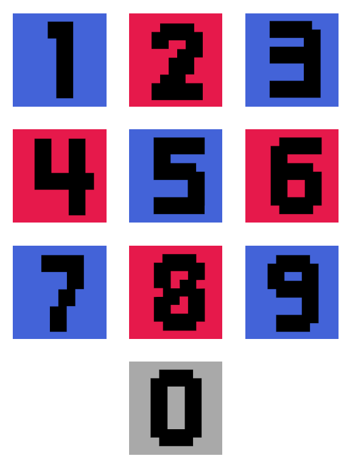
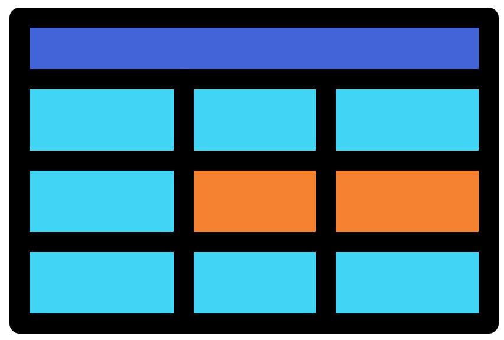
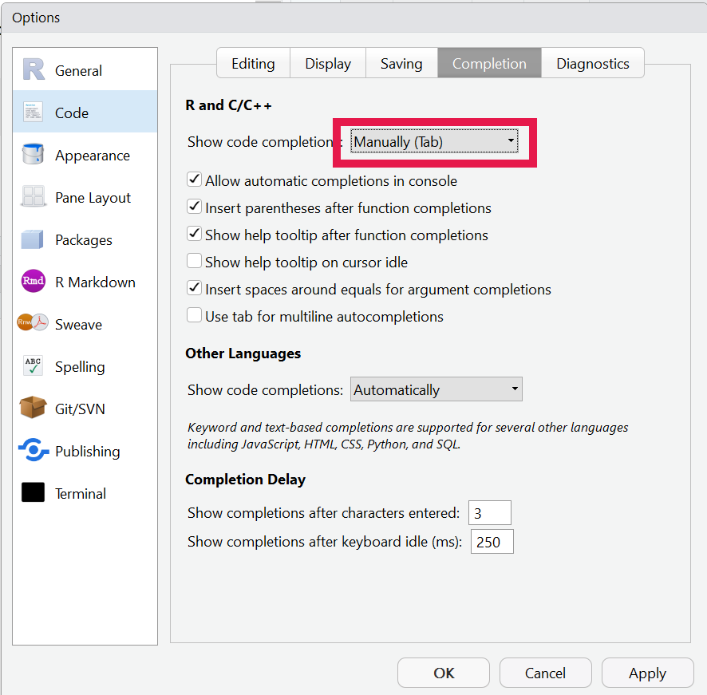
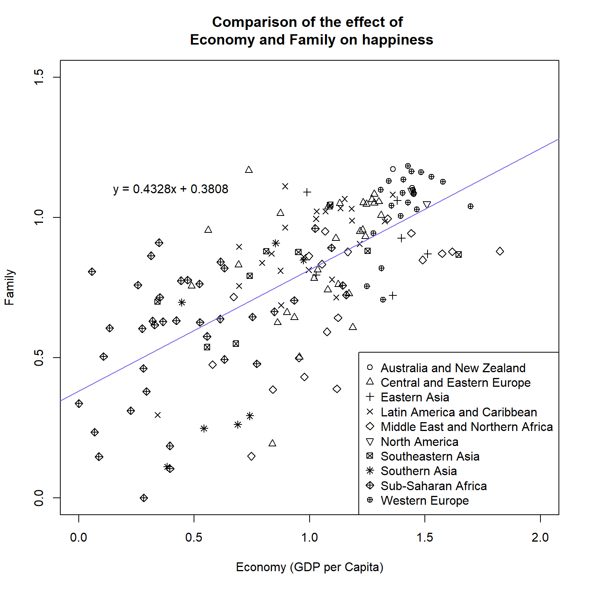
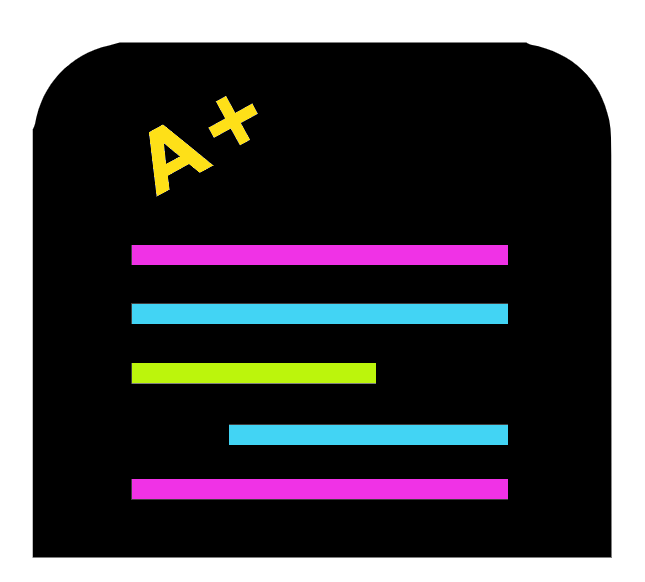
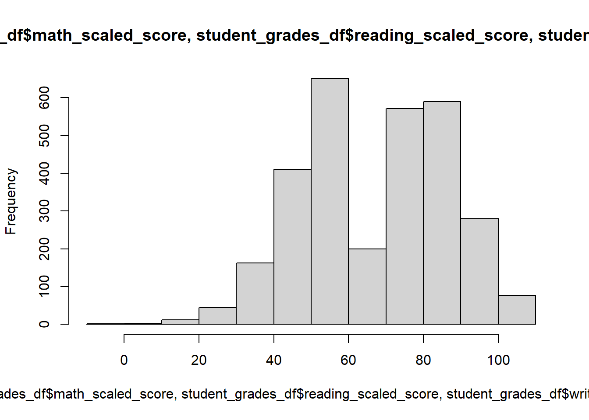

R primer for omics
Matthew R. Gemmell
2023-11-21

Chapter 1 Introduction

This course will teach you the fundamentals of R, an essential skill for some of our future courses. The first day will focus on the basics of R with foundations and objects. In day 2 we will look at how to read in files and write out files from R. Additionally, you will get further practice on the previous materials whilst learning some handy tips and tricks.
There are extra materials you can attempt after the workshop. These will allow you to apply your R skills to create plots and carry out some statistics. The plots section includes creating line graphs, histograms, scatterplots, and boxplots. The statistiscs section will cover carrying out some basic statistics, don’t worry it won’t be a statistics lesson. Finally, the last section will introduce some harder coding where you’ll learn to make loops, use ifs, and create R functions.
These materials will involve theory, practice, exercises, and solutions:
- The theory will explain R concepts and terminology. R terminology can be quite confusing but it is important to learn as it makes asking questions online a lot easier.
- Practice will involve code to run whilst reading through the theory. This will allow you to see the output of R and hopefully help you understand how R works.
- Multiple choice questions (MCQs): These will be used as recap questions at the end of chapters to help solidify the knowledge you are gaining.
- Exercises will give you a task to carry out based on the knowledge and skills you learned from the theory and practise.
- Solutions for the exercise are after the exercise. Please try the exercise before looking at the solutions, however make sure you read the solutions even if you completed the exercise successfully as there is extra information in these sections.
Commands are in the following font and colour and should be run in RStudio (These should not be copied into R from this document):
Table of contents
| Foundations | R objects |

|

|
| Files & subsetting data | Handy tips & tricks |

|

|
| Histograms & line graphs | Scatter plots & box plots |

|

|
| Basic stats | Basic programming |

|

|
| Appendix | |

|

This work is licensed under a Creative Commons Attribution-NonCommercial-ShareAlike 4.0 International License.
Chapter 2 Foundations of R
This section will cover the foundations of R. Understanding these concepts is fundamental to becoming an R user. The section will start with operators, these include +, -, *, and /, they allow us to use R like a calculator. Then we will look at variables. Variables allow us to save the output from commands so we can use it in future commands.
A lot of the power of R comes from the vast array of functions it contains. We will therefore look at some useful functions to see how they work. Additionally, we’ll look at how to interact with directories in R.
The section will end showing you some ways to use RStudio and the script editor.
2.1 Operators

Operators are symbols in R that allow you to carry out many common tasks. The 3 main types of operators in R are arithmetic, logical, and bitwise. We will ignore logical and bitwise and have a look at some arithmetic operators.
The four most commonly used arithmetic operators are:
+: Addition-: Minus/: Divide*: Multiply
Run the following commands in your RStudio console.
Note: Each line below represents one command. Once a command is typed out press enter to run the command.
Note: The amount of space between the integers/numbers and an operator does not matter. It is a matter of preference and clarity.
R follows the BODMAS rules (Brackets, Orders (powers/roots), Division, Multiplication, Addition, Subtraction). Try out the following commands to demonstrate the usefulness of brackets.
When entering commands via the console the results/output is printed to the screen (ignore the [1] at the moment). However, this is no better than a normal calculator currently. R is a lot more powerful as we shall see.
2.2 Variables

The output/result of a command can be saved as a variable. Below is the format for creating a variable in R (don’t type this into R).
There are 3 parts to the above:
- The variable name (
variable_name). This is the name of the variable and is what will be used to refer to the variable in future commands. This name can be almost anything. There are some rules on what can be in a name:- Must start with a letter.
- Cannot contain spaces.
- Cannot start with a number.
- Cannot share the same name as a command or function in R.
- They are case sensitive. The variable name
BBis different to the variable namebbwhich is different again tobB. I find it easiest to keep variable names in lower case.
<-is called the assignment operator. It assigns the variable object to the variable name.- Tip you can press ‘ALT’+ ‘-’ after a variable name as a shortcut for the assignment operator.
- The variable object (
variable_object). This can be many different objects including the output/results from commands, strings/words, numbers, and many other R data types.
A variable can be thought of as a box. The variable object is held in the box but it can be replaced with any other object. The variable name can then be thought as the label on the box so you can tell which box is which.
Type the below commands into the RStudio console.
Note. Remember the amount of spaces between operators and integers does not matter. I encourage you to experiment with this spacing so you find what is best for you in terms of ease and clarity.
In the above commands the variables are not printed out to the screen, this is as it should be. The variables are appearing in the environment pane (Top right). This is very convenient to see what variables are currently in the environment and to see what they contain.
To print the contents of a variable to screen you can type the variable name into the console and press enter. This will print the variable object to the screen. This is not needed for small variable objects, for which you can look at the environment pane, but is useful for larger variable objects.
2.3 Functions
R Functions allow the user to carry out a specific task. R has many inbuilt functions but you can also create your own. Currently we will look at in built functions.
The basic layout of a function is:
There are 3 main parts to the above:
- The function name (
function_name) - The object/s to provide to the function.
- This can be numbers, strings, variables we have created etc.
- Most functions require at least one object.
- Some functions can take multiple objects, if multiple objects are provided they must be separated by
,.
- Function options (
options). Options can be provided to some functions to alter the way they will work.- Some functions don’t have options.
- Most options have default modes. If the options is not specified the default mode will be used.
- Like objects, when using multiple options they must be separated by
,.
Try running the below commands in your Rstudio console.
ceiling(3.5)
floor(3.5)
sqrt(9)
round(3.5555, digits = 2)
round(3.5555, digits = 3)
round(3.5555, digits = 0)
two <- sqrt(4)The help page of functions can be accessed in 2 main ways:
- Click on the function name so your cursor is in it and press F1.
- Type
?followed by the function name. Example below:
2.4 Directories
It is important to know what directory you are working in and how to change to different directories.
2.4.1 Commands
Below are commands you can run in the RStudio console or script editor (use of script editor will be taught soon).
- Determine what directory you are currently in:
- Set working directory. The path of the directory must be in quotes like below. If you do run the below command make sure the path exists in your computer, as I am the sure the example below will not.
- List the files in the current directory:
2.4.2 RStudio Interface
The RStudio interface can also be used to carry out the above tasks.
To see what the current working directory is, you can look at the top bar of the console window. The below shows I am in the “F:/R/CE/CE_R_for_Everyone” directory.

There are two main ways to set your working directory.
- Via the tool bar:
- Click “Session”
- Go to the “Set Working Directory” drop down section
- Click “Choose Directory..”
- Use the pop-up browser to choose a directory
- Via the MISC window (bottom right)
- Click the Files pane
- Navigate to the directory you would like to set as the working directory
- On the MISC toolbar click on the cog icon (It may say “More” beside it).
- On the drop down click “Set As Working Directory”
To show the current working directory in the Files pane click the arrow on the top bar of the console window. You can then see what files and directories are in your working directory via the Files pane in the MISC window.
With this information create a directory you will use for this course. This can be done outside of Rstudio or you can use the Files pane in the MISC window. Once this is created set your working directory to it. With that done we can go onto the next section.
2.5 Script editor
You can quickly type and run code using the console window. However, to fully utilise Rstudio we will instead use the script editor in the source window. This allows us to reuse and edit code easier and it allows us to save our code so we can come back to it.
If you cannot see your script editor, click the multi window button on the top of the source window or console window.

Type the below into the script editor and press “enter”.
Pressing enter goes to a new line without running the command, just like other text editors (word, emails etc.).
On the new line type the below:
2.5.1 Running commands

You can run a command that is in the script editor by one of the two following ways:
- Via cursor:
- Move the cursor to the line you would like to run.
- Press “Ctrl” + “enter” ( “cmd” + “enter” for Mac)
- Highlighting:
- Highlight the parts you would like and press “Ctrl” + “enter” ( “cmd” + “enter” for Mac)
- You can highlight a part of a line, a whole line, and even multiple lines.
Run the commands you currently have in your script editor.
The script editor is unaffected with only the cursor moving if you used the cursor method. What is actually happening is that your commands are being copied to the console window and are being run there.
I would encourage to primarily use the script editor to write your code. It is brilliant for editing, reusing, and documenting your code.
2.5.2 Annotations
Annotations can be added to your code in the script editor. If a line starts with a # it will not be run as a command, this line is then an annotation. This is extremely useful to leave information for your future self. It is much harder to go back to old code and figure out what it does if it is just code.
Be a mate, annotate.
Edit the contents of your script editor so it looks like the below. Then run all the lines.
Tip: If you have selected the script editor you can use “Ctrl” + “a” to highlight all.
2.5.3 Saving scripts

Finally, one of the best aspects of using the script editor is that you can save your scripts. I use this so I can have scripts for specific projects and template scripts for certain tasks I routinely carry out.
- To save a script you can click the floppy disk on the toolbar of the source window.
- To save as, go to the RStudio toolbar and click “File” > “Save As…”.
2.5.4 Open a saved script
You can open a previously saved script in 2 main ways:
- Via the Files pane in the MISC window
- Navigate to the directory with the script (you do not need to set the working directory to this directory)
- Click the name of the script you would like to open
- Via the Rstudio toolbar
- Click “File”
- Click “Open file”
- With the popup browser navigate to the location of the script and open it
2.5.5 New script
You can have multiple scripts open at one time and switch between these scripts with the tabs at the top of the script editor window.
To create and open a new script, click on the button on the RStudio toolbar shown below and select “R script”.

2.6 Foundations MCQs

Choose the correct option to complete the below sentences:
- ________ are symbols that allow you to carry out common R tasks such as addition and multiplication.
- Hash tags (
#) can be used to create human readable ________ - ________ can be assigned as R Variables
- The assignment operator is: ________
sqrtis a R ________- You can run commands in the ________
Chapter 3 Foundations of R exercises

This will be the simplest of the exercises but will be a good opportunity to reinforce what you have learnt. In fact there is no solution section for this as it is unneeded.
The first task is to add the below text annotation to the top of your current script.
Now save the file as “1-Foundations.R” within your course directory.
For the next part you will need to create a new script and save it as “Exercises.R”.
On the first line of this script type the following annotation:
The #### creates a code section, these will be explained in a later week. You could also use ---- or ==== at the end of an annotation to create a code section.
The next step is the most tedious, unfortunately tedious repetition is one of the best ways to learn.
Please fill in the “Exercises.R” script with the commands from the operators and variables section from Chapter 2. Additionally, add in annotations so you can easily tell which sections the commands come from and brief lines on their purposes.
Annotations require a balance of enough info but not too much info, you don’t always need a line of annotation for each line of code. However, with some complex code sometimes you will need multiple lines of annotation for one line of code. It is all about how much annotation you and possibly others will need for the code at hand. Knowing this requires experience.
Next save the script, ensuring it is called “Exercises.R””
Finally, close your script by clicking the “x”” icon on the tab of the script.
That is the end of Foundations of R! If you have any questions please ask and we are more than happy to try to answer.
Chapter 4 R objects
In Chapter 2 we learnt how to create a variable. This consisted of assigning (<-) an object a name. In this chapter we will learn about R objects. There are two major R terminologies to learn to fully understand R objects.
- Class: An R object will have a specific class. The class determines what the object is. It could be numbers, text, or other types of classes.
- Data structure: This determines the structure of an R object.
The rest of today’s plan is to learn about classes and data structures.
4.1 Code sections
Today, and for the rest of the course, you will use code sections in your R scripts to separate sections in this book.
First set your working directory to your course directory, create a script, and save it as “2-Objects.R”.
Next create a code section at the top of this script called “Classes”.
In other words have the below at the top of your script:
4.2 Classes
There are six basic classes in R (Also known as the atomic classes).
The four we will learn are:
- Integer
- Double
- String
- Logical
There are also the classes complex and raw.
4.2.1 Numeric

Numeric classes come in two types, integer and double. Integers and doubles are almost identical. However, doubles contain decimal point information whilst integers do not.
Most of the time you will only need to know if your data is numeric and you will not need to worry about doubles or integers. The exception being if you are working with decimals and your decimals are not showing up. This probably means that your object has the integer class.
Type and run the following, using the provided annotation to understand what the commands are doing.
Note: Remember you can copy and paste old script.
Use the function class() to show the class of an R object:
Create a variable with the name “pie”” containing the numeric 3.14:
Use the functions as.numeric(), as.integer(), and as.double() to print the variable as a numeric, as an integer, and as a double:
#Printing out previously made variable as numeric, integer, and double
as.numeric(pie)
as.integer(pie)
as.double(pie)You can put a function as the variable within a function.
Below we will first check the class of the object within the “pie” variable. You will note that the functions we used previously did not permanently change the variable’s object. We can only change a variable if we use the assignment operator.
Then we will check the class of the object as it is altered by the various as. functions.
#Checking the class of our variable
class(pie)
class(as.numeric(pie))
class(as.integer(pie))
class(as.double(pie))Note: Remember to ask for help if you need it!
On a side note, R comes with some inbuilt variables such as pi:
#The R pi is equal to 3.141593
pi
#assign pi to 3.14
pi <- 3.14
#print out pi to see you have changed the variable's object
pi
#in this case if you want the original R pi object back, we can remove the one we made
rm(pi)
piHave you been annotating your scripts?
4.2.2 Logical
 Logical values can be TRUE or FALSE.
Logical values can be TRUE or FALSE.
They are primarily used when comparing objects.
Run the below commands to output Logical values using the various logical operators.
Note: when ! is used in operators it means “not”. When used, ! always goes at the front of the operator.
#Logical
# 2 less than 4
2 < 4
# 2 greater than 4
2 > 4
# 2 less than or equal to 4
2 <= 4
# 2 greater than or equal to 4
2 >= 4
# 2 equal to 4
2 == 4
# 2 not equal to 4
2 != 4It is probably not immediately obvious how useful logicals are, but you’ll see their usefulness later in the course.
4.2.3 String
 Strings are text and can be modified in R in ways you would normally want to modify text. They are called strings as they are strings of characters. Strings are flanked by quote marks. Double quotes (
Strings are text and can be modified in R in ways you would normally want to modify text. They are called strings as they are strings of characters. Strings are flanked by quote marks. Double quotes ("") are preferred but single quotes can also be used ('').
Type and run the below examples to get some practice with strings.
A string object can consist of a string containing one character:
A string object can consist of a string containing multiple characters:
A string can contain all the different characters and any number of them. The only exception is that if you try to put a double quote in your string it will cause an issue.
A string doesn’t need letters, it can consist of only numbers. Note the terms string and character can be used interchangeably.
You can convert a numeric to a string/character.
An appropriate string can be converted to a numeric. This is useful as mathematical operators will not work with strings.
#will get an error as strings and maths don't mix
"6" - 3
#will work as maths and numerics work
as.numeric("6") - 4
#Below will not work as only strings containing numbers can be converted to numeric
as.numeric("not_a_number_12")You can use certain logical operators to compare strings though:
The paste() function is very useful to combine two or more strings into one.
paste("The following is a string:", long_string)
paste(number_string, "and the", word_string)
#By default paste will put a space (sep = " ") between each string you provide
#You can use the sep option to specify your own
paste("However", " this is separated by a comma", sep = ",")
#Or you can make it so there is no separator
paste("no separator",numeric_to_string, sep = "")
#Alternatively you can use paste0()
#Where there is no separator by default (sep ="")
paste0("no separator",numeric_to_string)4.3 Code section continued
After all that you will have some nice code and annotations in your script editor for the Classes code section.
Making a code section is not very useful until you have multiple code sections. To show this create a new code section at the bottom of your script called “Data structures”. This new code section will be used for the next section.
With the new code section created we can now see why code sections are so useful. Go to the text that denotes the first code section (“Classes”). Look between the numbers on the left that signify the line number, and the text. You will see an arrow pointing downwards. You can click that arrow and it will collapse the code section. Click the arrow, now pointing right, and it will expand the code section. This is super useful so you can hide code sections in your script that you don’t currently need to look at.

With the “Classes” code section collapsed let us continue to the next section. There will be less annotations in this book as I expect you will make your own now.
4.4 Data structures
Data structures describe how data is structured in an object. We will go into 3 main types of data structures.
- Scalar
- Vectors & Lists
- Matrices & Data frames
4.4.1 Scalar
 A scalar consists of one value in an object. This can be one string, one numeric, one logical etc. We have only been working with scalars thus far but this is about to change.
A scalar consists of one value in an object. This can be one string, one numeric, one logical etc. We have only been working with scalars thus far but this is about to change.
4.4.2 Vectors & Lists
A R object can hold multiple values. Many data structures can do this with the simplest being a vector.
A vector can be created with the c() function. This function will combine the provided objects into a single vector or list.
Vectors and lists are both 1-dimensional data structures. Vectors can only contain one class (homogeneous) whilst lists can contain multiple (heterogeneous). There is more to lists but we will not go into them.
Run the following commands to produce variables which contain vectors.
number_vec <- c(1,2,4,8,16)
number_vec
number_series_vec <- 1:6
number_series_vec
animals <- c("Whale","Seal","Hedgehog","Mouse","Owl","Squirrel","Vole","Shrew")
animalsElements of a vector can be accessed through their indices:
birds <- animals[5]
birds
aquatic <- animals[1:2]
aquatic
rodents <- animals[c(4,6,7)]
rodents
mammals <- animals[-5]
mammalsYou can use operators and functions on a vector. When you do each scalar within the vector will be acted upon.
Some functions are specifically used for vectors:
We can also test the values within vectors:
The paste() function can be used to paste string scalars to other string scalars or to string vectors:
4.4.3 Data frames & Matrices

Data frames & matrices are 2-dimensional data structures as they have rows and columns.
A matrix only contains 1 class (homogeneous). A data frame can contain multiple classes (heterogeneous), but each column can only contain one class.
Most of the time data frames and matrices can be treated the same. Because of this I generally use data frames and so we will focus on them.
R comes with a set of pre-loaded data. If you are interested you can use the function data() to see the full list.
We will have a quick look at the dataset “mtcars”. This is a data frame containing information on various cars. To look at the data frame in the console window run the below.
The above shows the info in the console window. However we can have a better look at it in RStudio if we save it as a variable in our environment and then click the variable name on the Environment pane of the “environment and history” window.
Now the variable will be listed in your Environment pane in the “environment and history” window . Click on the name “cars_info” in the Environment pane. A tab in your script editor will open so you can have a good look at the contents of the data frame.
When you are ready, close the “cars_info” tab and remove the variable with the below command.
Now it is time to create our own data frame.
First we will create three variables containing vectors. These will be our three columns.
Now let us create the data frame.
#Using the function data.frame to create a data frame
beach_df <- data.frame(Crab,Oystercatcher,Starfish)Look at the variable “beach_df” (it is useful to use “df” in variable names to signify it is a data frame) and you will see that each vector has become a column. The variable names have become the column names (this is why we used capital letters in the variable names).
You can think of data frames in three different ways:
- A list of columns
- A list of rows
- A table
Look at the column and row names with two new functions.
We can use the function row.names() and the assignment operator to change the row names to something more useful.
Now look at your “beach_df” data frame to see the difference.
4.5 Objects MCQs

Attempt the below MCQs.
- What class are numbers normally stored in?
- What class is text normally stored in?
- What class has the value of TRUE or FALSE?
- Which data structure is 2-dimensional and heterogeneous (can contain multiple classes)?
- Which data structure is 1-dimensional and homogeneous (can only contain 1 class)?
- Which data structure consists of only one value?
- Which function can show the class of an R object?
- Which function can be used to combine strings?
- Which function can be used to create a vector?
- Which logical operator means “less than”?
- Which logical operator means “not equal to”?
- Which logical operator means “greater than or equal to”?
There was quite a lot to go through in this chapter, so let us reinforce it all with exercise!
Chapter 5 R objects exercises
For this exercise simply produce the following tables as data frames in R. Please carry this out in your “Exercises.R” script and remember about code sections and annotations.
Tip: You can either write completely new code or reuse and alter previous code.
5.1 df
Note: The top row is the column names and the left-most column is the row names.
| One | Three | Five | |
|---|---|---|---|
| Two | 2 | 6 | 10 |
| Four | 4 | 12 | 20 |
| Six | 6 | 18 | 30 |
5.2 beach_df_2
Note: The top row is the column names and the left-most column is the row names.
| Crab | Oystercatcher | Sandpiper | Starfish | |
|---|---|---|---|---|
| Formby | 10 | 5 | 1 | 3 |
| West Kirby | 1 | 6 | 1 | 3 |
| Crosby | 1 | 4 | 2 | 7 |
| New Brighton | 4 | 4 | 3 | 4 |
Chapter 6 R objects solutions
6.1 df solution
6.1.1 Step 1
Create vectors for columns and row names:
6.1.2 Step 2a
Create the data frame from vectors:
Add row names:
6.2 beach_df_2 solution
6.2.1 Step 1
Create vectors for columns and row names:
6.2.2 Step 2a
Create the data frame from vectors:
Add row names:
Chapter 7 Files and subsetting data
7.1 Reading from a file

In chapter 4 we created data frames with R functions. This was useful to help understand how data frames work in R. However, in real life you will most likely not do this very often. Instead you will have data files you need to analyse with R.
You can get your data into R by having R read your file.
7.1.1 Directory and file setup
Prior to using a file you will need to acquire it.
- Make a directory/folder called “Chapter_7” within your main directory/folder for this workshop.
- Download the file Liverpool_beaches.csv into “Chapter_7”.
- Set your working directory to this new directory (Directories). You will stay here for this chapter.
7.1.2 Viewing the file

The next task to carry out is to read in the file “Liverpool_beaches.csv” . Before reading in the file we can check the contents of the file. This can be carried out by opening it with notepad (or similar text tool) or viewing the file with RStudio.
To view the file with RStudio:
- Use the Files pane of the MISC window to navigate to the directory containing the file.
- Click on the file name and then click “View File”
- This will open a tab in the Source window matching the file name
You will notice that the values are separated by commas as this is a “comma separated value” (.csv) file. Additionally, this is the same data as the “beach_df_2” data frame you created in the chapter 5 exercises.
Note: Create a new R script file called “3-Files_and_subsetting.r” for this chapter’s scripts.
7.1.3 read.csv()

There are various functions to read in files into R. My favourite is read.csv(). Use this function to read in the file “Liverpool_beaches.csv”:
Have a look at the newly created data frame. Is it how you would like it?
The row names are empty and the beach names are in the first column. Let us fix this and make it so the beach names are the row names. This can be carried out by including the option row.names = 1 to specify the 1st column will be the row names:
We now know how to read in a csv file with read.csv.
7.1.4 TSV files

For our next task we will read a tab separated file.
Download Global_eco_footprint.tsv into your “Chapter_7”. This file contains The ecological footprint measures the ecological assets that a given population requires to produce the natural resources it consumes.
More info can be found in the following link: https://www.kaggle.com/datasets/footprintnetwork/ecological-footprint.
Now use read.csv() to read in the file. We’ll set row.names = 1 again but we will also include the option sep = "\t". This option specifies the columns are separated (sep) by tabs ("\t").
Look at the resulting data frame and you will notice the column names have been changed by R. This is annoying but thankfully there is an easy fix. Read in the data again with the inclusion of the parameter check.names = FALSE. This will stop the function read.csv() from ‘checking’ and ‘fixing’ the column names. I always use this option.
7.1.5 Excel files and R
You may want to open excel files with R. Normally to do this I open the file in excel and save it as a .csv or a tab separated file and read this into R. Alternatively there are R packages that can directly read in excel files. If this is something you would like to do you can look at the following package:
An important note is that reading in a file into R will not change the file. You are creating a new R object. Modifying this object will not alter the original file. Later in the materials we will look into how to create new files or overwrite files by writing.
7.2 Subsetting data

R allows you to specify specific points in R objects. This is one of the primary reasons R is so useful and flexible. With good use of assignment operators this allows for the subsetting of variables.
7.2.1 Vectors

We will start with vectors. Before carrying out and subsetting let us create some new vectors. We will use a new function to create these, seq().
Tip: Look at the resulting vectors and, use ?seq() or search online to understand the seq() function better.
even_seq <- seq(from = 0, to = 8, by = 2)
odd_seq <- seq(from = 1, to = 9, by = 2)
long_seq <- seq(from = 10, to = 300, by = 10)Grand! Now let us subset the vectors with square brackets [].
Vectors are one-dimensional, we therefore provide the square brackets with one number or one range of numbers. The number/s we provide in the square brackets are the index.
Try out indexing/subsetting the vectors.
even_seq[2]
odd_seq[1]
long_seq[10]
even_seq[2:3]
odd_seq[1:4]
long_seq[21:24]
long_seq[24:21]
even_seq[c(2,3)]
odd_seq[c(1,3,2,5)]
long_seq[c(1,21,21:24,24:21,1)]
#As long as the contents within the [] equal numbers they will work
even_seq[seq(from = 1, to = 3, by = 2)]
even_seq[seq(from = 0, to = 5, by = 3)]
long_seq[seq(from = 1, to = 19, by = 2)]
even_seq[1*2]
odd_seq[2/1]
long_seq[(1:10)*2]The vectors even_seq and odd_seq have the indexes 1,2,3,4, and 5 as they each contain 5 scalars. What if we try to use a higher number to index than is available?
As you can see the above all work with no complaints. Any indexes that are out of range will return a NA value. NA stands for ‘Not Available’. We will not go into how NA works in R too much. The most important thing to know about NA is that you will most likely get NA if you use operators or functions with NA. Below are a few examples:
#Will give NA
1 + NA
2 - NA
even_seq[2] * NA
odd_seq[5] / NA
#mean() function without NA
mean(even_seq[2:5])
#mean() function with NA
mean(c(1,2,3,4,5,NA))
mean(even_seq[2:7])Above we subsetted vectors by specifying which indexes we want. We can also specify which indexes we don’t want:
The rep() function will replicate a scalar/vector a specified amount of times. We will use this function to overwrite our previously created variables with longer versions:
#Replicate vector even_seq 2 times
rep(x = even_seq, 2)
#Replicate vector even_seq 4 times and then assign even_seq as the newly created vector
even_seq <- rep(x = even_seq, 4)
#More examples
odd_seq <- rep(x = odd_seq, 4)
long_seq <- rep(x = long_seq, 3)Logical operators can be used as indexes to subset vectors. Having a logical expression (i.e. 1 > 2) as the index will cause all TRUE positions to be included and all FALSE positions to be excluded.
Tip: If it is difficult to deduce what the below commands are doing you can run the part in the square brackets by itself. Remember if you highlight code in the script editor it will only run that part, excluding unhighlighted parts of script in the same line.
We will quickly look at a new operator, %%. This is the modulus operator, it divides two numbers and gives the remainder of the division.
With the modulus operator, logical expressions, and subsetting we can extract even or odd numbers from a vector:
#First some basic modulus examples
2%%2
3%%2
#Create a vector with numbers 0 to 9
single_digit_vec <- 0:9
#Extract even numbers then odd numbers from the vector
#We carry this out by determining if numbers are divisible by 2 or not
even_seq <- single_digit_vec[(single_digit_vec %% 2) == 0 ]
odd_seq <- single_digit_vec[(single_digit_vec %% 2) != 0]
#We can determine which numbers in a vector are divisible by any specific number
#Divisible by 3
#remember variable names cannot start with numbers
divis_3_vec <- single_digit_vec[(single_digit_vec %% 3) == 0]
#Divisible by 7
divis_7_vec <- single_digit_vec[(single_digit_vec %% 7) == 0]
#Try out other numbers!7.2.2 Data frames
Data frames can be subset similar to vectors. As with vectors you can use []. Additionally, $ can be used to subset data frames.
Square brackets must be provided indexes for rows and for columns. The structure for this is df[row,column]. It is very useful to remember that R always wants rows first then columns second.
To practice subsetting data frames with square brackets we will read in a new file called - parks_biodiveristy.csv. This contains the number of different species of various groups (Bird, Mammal, etc.) in US national parks. Data can be found:
https://www.kaggle.com/datasets/nationalparkservice/park-biodiversity
#Read in the file
parks_df <- read.csv("parks_biodiveristy.csv", check.names = FALSE,
row.names = 1)
#View the resulting object
parks_df
#View its column names
colnames(parks_df)Now for some subset commands:
#Scalar from the 1st row and 1st column
parks_df[1,1]
#Row names and column names can be used for indexing
#Scalar from the row called L10 1LD and the column called Area
parks_df["YOSE","Amphibian"]
#More examples
parks_df[1:10,2]
parks_df[1:10,"State"]
parks_df[3,2:4]
parks_df["SAGU",2]
parks_df[1:10,"Bird"]
parks_df[c(1,3,5,6),c("Bird","Fish")]Depending on how you subset a data frame you may get a scalar, vector, or data frame. Below describes which you will get based on the subsetting.
- Scalar:
- Indexing to get a single value by choosing one row and one column.
- E.g.
parks_df[1,1]
- Vector:
- Indexing so you get multiple values from one column. This occurs as each column is in essence a vector.
- E.g.
parks_df[1:10,2]
- Data frame:
- Indexing so you get multiple values from a row or multiple rows. Subsetting a data frame like this provides you a data frame.
- E.g.
parks_df[3,2:4]orparks_df[3:4,2:4]
A quick function to subset a data frame is head(). By default it will return the first 6 rows.
The data frame is quite large. We will therefore use the head() function and the assignment operator to make the data frame smaller for further examples.
To return all the rows of the specified columns you can leave the part before the comma empty. Similarly you can leave the part after the comma empty to return all of the columns of the specified rows. Leave both sides empty and you will get the entire data frame.
The sign $ allows you to indicate which column you would like from the data frame. This is done like so:
You will notice that the above commands return vectors. We can therefore subset these vectors with []:
Below are a selection of useful functions that can be used on vectors.
#Sum the values of a numeric vector
sum(parks_df$Mammal)
#Mean of the values of a numeric vector
mean(parks_df$Mammal)The above functions are useful but limiting if you are working with data frames. Thankfully there are also many functions used specifically for data frames (they can also be used for matrices).
#Sum numeric columns
colSums(parks_df[,3:6])
#Sum numeric rows
rowSums(parks_df[,4:5])
#Mean of numeric columns
colMeans(parks_df[,3:6])
#Mean of numeric rows
rowMeans(parks_df[,4:5])
#Summary information for each column
#This works for string and numeric columns with different outputs
summary(parks_df)Try out some of the above commands with the entire data frame. Do they give an error? Is so, why?
Before we learn how to write data to a file I will introduce one more data frame associated function. t() which stands for transpose:
Try the above commands without subsetting the data frame. What is happening and why?
7.3 Writing to a file

Before we write data to a file we will create a new data frame from “parks_df”.
First I like to create a new variable from our old variable if there are many steps. This means if we make a mistake we can go back and recreate the new variable.
Next step we will create a new column called “Total_species”.
NOTE: I am including many ways to subset columns as reminders. Normally I wouldn’t have so many different ways in one command.
NOTE: We are using “_” instead of spaces as R doesn’t particularly like spaces in column names. We will see how to use spaces later.
The final step before writing is to transpose the data frame leaving out the Park name and State columns:
#Transpose dataframe
parks_t_df <- t(parks_t_df[,3:8])
#Check structure
str(parks_t_df)
#It is not a dataframe
#Let us therefore convert it to a data frame
parks_t_df <- as.data.frame(parks_t_df)
#Structure check
str(parks_t_df)After all that let us write the data frame to a file called “Park_species_info.csv”. When reading from a file I prefer read.csv(), however when writing to a file I prefer write.table(). With this function we will include the option sep="," to have commas as the column separators. We will also include the option col.names=NA to create an empty space above the row names. If this was not included then the first column name would be above the row names.
Have a look at the file contents with RStudio.
Let us do it one more time with the Global ecological footprint info. First let us read in the file again in case you do not have it. Then we will create a total sales column and finally transpose the data frame:
#Read in
global_eco_footprint_df <- read.csv("Global_eco_footprint.tsv",
row.names = 1, sep = "\t",
check.names = FALSE)
#Transpose ensuring output is a data frame
global_eco_footprint_t_df <- as.data.frame(t(global_eco_footprint_df))Write the data frame to a tab delimited file (.tsv). This time we will make it so the row and column names are not surrounded by quotes:
write.table(global_eco_footprint_t_df,
"Global_eco_footprint_transposed.tsv",
sep = "\t",
col.names=NA,
quote = FALSE)With the fundamentals of reading, subsetting data frames, and writing covered it is time to carry out some exercises.
7.4 Files & subsetting MCQs
Attempt the below MCQs.
- Which function can be used to transpose a data frame?
- Which function can be used to import the contents of a file into a R object?
- Which function can be used to export the contents of an R object into a file?
- For
read.csv()orwrite.table()which option allows you to read/write comma separated files? - For
read.csv()which option allows you to read in the data without causing unwanted changes in the text of the column names? - For
read.csv()orwrite.table()which option allows you to read/write tab separated files
Chapter 8 Files exercises
This exercise will look at two files. You will be assigned tasks requiring you to read and write files as well as index data frames.
Use your “Exercises.R” file, ensuring you are using code sections to separate the different exercises. Additionally, set your working directory to your main workshop directory.
Create a new directory called “Chapter_8_files” within your main workshop directory to download the files bat_roosts.csv & UK_retail.tsv.
As the files we are going to read are in a different directory to our working directory we will have to specify the directory along with the file names. For example, to read in the “Liverpool_beaches.csv” file from the main directory you could use the following command.
Ensure you also write any output to “Chapter_8_files”.
8.1 Bats

First we will look at the file bat_roosts.csv. This contains information on the max number of roosts for different Bat species in different UK regions.
The data is from: “Bat Conservation Trust 2020. Roost Count peak counts summary data”. Available from https://www.bats.org.uk/our-work/national-bat-monitoring-programme/reports/nbmp-annual-report
For this file carry out the below tasks:
- Read in the file “bat_roosts.csv” as a data frame variable called “bat_df”. Ensure the row names contain the Regions (Channel Islands, East Midlands, etc.).
- Inspect the variable and ensure there are only numerics within the data frame with all strings only being in column and row names.
- Add a row to “bat_df” called “UK” that contains the totals for each Species.
- Add a column to “bat_df” called “All_Bat_Species” that contains the totals for each Region.
- Create a transposed data frame of “bat_df” called “bat_t_df”.
- Write the data frame “bat_t_df” to a comma separated file called “bat_roosts_t.csv”. Ensure there are no quotes surrounding the row or column names.
Now that you have carried that out, attempt following MCQs using the “bat_t_df” object.
- Which region has no roosts?
- Which region has the largest amount of Myotis brandtii roosts (excluding UK)?
- Which Bat species has the highest number of roosts across the UK?
- Which Bat species has the lowest number of roosts across the UK?
8.2 Honey bee colonies
Next we have a file (honey_bee.tsv) that contains information on the number of Honey Bee colonies in 4 different states. It is temporal data containing information on the 4 quarters for the years 2015-2018.
For more details and even more data please see the following link: https://www.kaggle.com/datasets/kyleahmurphy/nass-honey-bee-20152021
Carry out the below tasks:
- Read in the file “honey_bee.tsv” as a data frame variable called “bee_colonies_df”. Ensure the row names contain the Year info (2015-Q1, 2015-Q2, etc.).
- Create a data frame called “bee_colonies_2017_2018_df” containing the rows for 2017 & 2018 from “bee_colonies_df”.
- For each month in 2017 & 2018 print out the phrase “The number of colonies in Minnesota for <Year> was <Value>.
- For example the first phrase will be “The number of colonies in Minnesota for 2017-Q1 was 27000”.
- This can be done with one line of code using the
paste()function.
- Make an average (mean) row for “bee_colonies_2017_2018_df”.
- Finally write out the data frame “bee_colonies_2017_2018_df” as a tab separated file called “bee_colonies_2017_2018.tsv”.
Now that you have carried that out, attempt the following questions based on the “bee_colonies_2017_2018_df” object.
- Which state has the lowest average?
- Which state has the highest minimum value of colonies?
- Which state had 20,000 colonies in Q3 of 2018 (2018-Q3)?
Tip: If you use the summary(), ensure you do not include the “Average” row.
Great! Have a look at the solutions and ask any questions you would like.
Chapter 9 Files solutions
Before looking at these solutions keep in mind that there are many different ways to do the same thing in R. Therefore if your scripts are different than the ones below it does not mean they are wrong. As long as they produce the intended output they are correct.
9.1 Bats solution

Read in the file as a data frame:
Add a row with column totals:
Add a column with row totals:
Create transposed data frame:
Write file:
write.table(bat_t_df, file = "Chapter_8_files/bat_roosts_t.csv",
sep = ",", quote = FALSE, col.names = NA)You can figure out the MCQs by viewing the data frame. However, you can also figure them out with R code. Below are commands to get the answers for the MCQs. I will let you decipher them yourself.
#Question 1: Which region has no roosts?
col_names_logical_vec <- bat_t_df["All_Bat_Species",] == 0
colnames(bat_t_df)[col_names_logical_vec]
#Question 2: Which region has the largest amount of _Myotis brandtii_ roosts?
species <- "Myotis brandtii"
df_wo_total_species_and_uk <- bat_t_df[1:(nrow(bat_t_df)-1),1:(ncol(bat_t_df)-1)]
max_colonies <- max(df_wo_total_species_and_uk[species,])
col_names_logical_vec <- df_wo_total_species_and_uk[species,] == max_colonies
colnames(df_wo_total_species_and_uk)[col_names_logical_vec]
#Question 3: Which Bat species has the highest number of roosts across the UK?
max_uk <- max(bat_t_df[1:(nrow(bat_t_df)-1),"UK"])
row_names_logical_vec <- bat_t_df$UK == max_uk
row.names(bat_t_df)[row_names_logical_vec]
#Question 4: Which Bat species has the lowest number of roosts across the UK?
min_uk <- min(bat_t_df[1:(nrow(bat_t_df)-1),"UK"])
row_names_logical_vec <- bat_t_df$UK == min_uk
row.names(bat_t_df)[row_names_logical_vec]9.2 Honey bee colonies
Read in file:
bee_colonies_df <- read.csv("Chapter_8_files/honey_bee.tsv",
sep = "\t", row.names = 1, check.names = FALSE)Create 2017 & 2018 data frame: Read in file:
#Can index to get the desired columns
bee_colonies_2017_2018_df <- bee_colonies_df[9:16,]
#Alternatively the tail() function can be used
#It is like head() but will get lowest rows
bee_colonies_2017_2018_df <- tail(bee_colonies_df, n = 8)Print Minnesota colony numbers:
paste("The number of colonies in Minnesota for", row.names(bee_colonies_2017_2018_df),
"was", bee_colonies_2017_2018_df$Minnesota,
sep = " ")Mean row:
Write out file:
write.table(bee_colonies_2017_2018_df, "Chapter_8_files/bee_colonies_2017_2018.tsv",
sep = "\t", col.names = NA, quote = FALSE)You can figure out the MCQs by viewing the data frame. However, you can also figure them out with R code. Below are commands to get the answers for the MCQs. I will let you decipher them yourself.
#Question 1: Which state has the lowest average?
min_average <- min(bee_colonies_2017_2018_df["Average",])
states <- colnames(bee_colonies_2017_2018_df)
min_average_state <- states[bee_colonies_2017_2018_df["Average",] == min_average]
min_average_state
#Question 2: Which state has the highest minimum value of colonies?
bee_summary <- summary(bee_colonies_2017_2018_df[1:8,])
bee_summary
#Question 3: Which state had 20,000 colonies in Q3 of 2018 (2018-Q3)?
n <- 20000
column_logical_vec <- bee_colonies_2017_2018_df["2018-Q3",] == n
column_logical_vec
colnames(bee_colonies_2017_2018_df)[column_logical_vec]Chapter 10 Handy tips & tricks
Welcome to Chapter 10! This chapter will include coding to reinforce what you have learnt up to this point. There will also be plenty of new handy functions and some more concepts to learn.
For this chapter create a directory called “Chapter_10-11” in your main directory and set it as the working directory. Then create a script called “4-Handy_tips.R”. Remember to use annotations (#) and code sections (####)!
I’ll first introduce you to some R conventions and then some useful abilities of RStudio.
10.1 R conventions

R conventions are style guides. You do not need to follow them but they are intended to help make code easier to read. There are lots of different suggestions for different parts of R code. Here we will only look at conventions for object/variable names and wide vs long code formatting.
10.1.1 Variable names
Variable names have certain rules that must be followed. We covered these in chapter 2 but below is a reminder:
- Must start with a letter.
- Cannot contain spaces.
- Cannot start with a number.
- Cannot share the same name as a command or function in R.
- They are case sensitive. The variable name
BBis different to the variable namebbwhich is different again tobB.
On top of these rules there are a few naming styles that are recommended. It is very good to choose one naming style and stick with it always. Below are three commonly used naming conventions for R. Look through them and choose your favourite to use.
10.1.1.1 Snake case
 Snake case is my preferred naming convention due to my background. It consists of using lower case letters with underscores (
Snake case is my preferred naming convention due to my background. It consists of using lower case letters with underscores (_) between words. Numbers can also be used. Below are some examples of names in snake case.
10.1.1.2 Period separated
Period separated is almost identical to snake case. Just swap the underscores (_) with periods (.). Below are some examples of names in period separated.
10.1.1.3 Camel case
 Camel case has no symbols to separate words. Instead after the first word every word starts with an upper case. Below are some examples of names in Camel Case.
Camel case has no symbols to separate words. Instead after the first word every word starts with an upper case. Below are some examples of names in Camel Case.
There are exceptions when you will want to break your preferred naming style. One such example is when you are creating vectors to be used as columns for a data frame.
10.1.1.4 Wide vs Long coding
If a command/function is only on one line then you were using wide coding. This is good with short commands and functions but is not very suitable for longer commands. Below are examples of long commands over one line each.
#Create a data frame called df
df <- data.frame(one = c(2,4,6), three = c(6,12,18), five = c(10,20,30), row.names = c("Two", "Four", "Six"))
#Create a data frame called beach_df_2
beach_df_2 <- data.frame(Crab = c(10,1,1,4), Oystercatcher = c(5,6,4,4), Sandpiper = c(1,1,2,3), Starfish = c(3,3,7,4), row.names = c("Formby","West Kirby","Crosby","New Brighton"))Compare the above with the below long coding where arguments are separated by new lines.
#Create a data frame called df
df <- data.frame(one = c(2,4,6),
three = c(6,12,18),
five = c(10,20,30),
row.names = c("Two", "Four", "Six"))
#Create a data frame called beach_df_2
beach_df_2 <- data.frame(Crab = c(10,1,1,4),
Oystercatcher = c(5,6,4,4),
Sandpiper = c(1,1,2,3),
Starfish = c(3,3,7,4),
row.names = c("Formby","West Kirby","Crosby","New Brighton"))Hopefully you will agree with me that the long coding is a lot easier and quicker to read.
If you are interested in more about R style guide I would recommend looking at the following resource: https://style.tidyverse.org/
10.2 RStudio
RStudio has many useful features which we have not covered. Let us remedy this and cover a few.
10.2.1 Global options

To get to the RStudio Global Options click “Tools” in the RStudio Toolbar, then from the drop down menu click “Global Options..” . You should see something similar to the below:

Have a look through the “General”, “Code”, and “Appearance” sections. The other sections are more advanced and I would suggest you ignore them currently.
Feel free to click on options in the “Appearance” section to see what they do. If you do not like your choices you can click the “Cancel” button to negate your recent choices and close the window. If you want to save your changes you can click the “Apply” button.
Change the following for later.
- Go to Global options.
- Click on the “Code” section on the left.
- Click on the “Completion” tab at the top.
- Ensure “Show code completion:” is set to “Manually (Tab)”
- Click “Apply” at the bottom followed by “OK”.
This will be useful for tab completion which we will cover shortly. 
10.2.2 Sweep buttons
 Sweep buttons allow you to sweep away items you no longer want in RStudio. There are two main sweep buttons, one for the Console window and one for the Environment pane.
Sweep buttons allow you to sweep away items you no longer want in RStudio. There are two main sweep buttons, one for the Console window and one for the Environment pane.
The sweep button for the console window will clear all the text in the console pane. This is useful if you have filled the console with lots of commands and data frames. This sweep button will not actually affect any of your work so do not be afraid to use it. The location of the sweep button is shown below.

The sweep button for the Environment pane is a bit more dangerous. This sweep button will clear all the objects from your environment. This will remove all the variables you have created. This is not too bad if you have been using the script editor to do your work as you can rerun all your commands to refill your environment. The location of the sweep button is shown below.

10.3 Multiplication table
Hopefully you’ll find the above useful. We will learn some new functions but before that let us create a quick data frame. You are going to make a multiplication table. The data frame will be a 10 by 10 table with numbers one to ten as the row names and the column names. The value in each cell/index will be equal to the row name number multiplied by the column name number.
Before looking at the code below can you think of a way to do this?
The code below shows a method to create this data frame. I have tried to show you a variety of methods to create the vectors below for demonstration purposes. Look at each command and make sure you understand how they work before continuing. In real life I would use one of these methods rather than many different methods.
Tip: If you double click a word/name in the script editor it will highlight it. You can then start typing to replace the highlighted word.
#Vectors that will become columns
one <- 1:10
two <- one*2
three <- one+two
four <- seq(from = 4, to = 40, by = 4)
five <- (1:10)*5
six <- seq(from = 6, by = 6, length.out = 10)
seven <- one * (rep(x = 7, 10))
ate <- (1:80)[((1:80) %% 8) == 0]
nine <- one * (rep(x = 9, 10))
ten <- (seq(100,1000,100))/rep(10,10)
#Vector for row name
row_names <- c("one","two","three","four","five",
"six","sefen","ate","nine","ten")
#Create data frame
multiplication_df <- data.frame(one, two, three,
four, five, six,
seven, ate, nine, ten,
row.names = row_names)Have a look at the resulting data frame. You may have noticed that two of the row names and one of the column names is incorrect. We’ll use the functions colnames()and row.names() along with indexes and assignment to change these.
10.4 Tab complete
 Tab completion is a very useful method when coding in any language. It takes some practice to get used to but it increases the speed of coding and drastically reduces typos.
Tab completion is a very useful method when coding in any language. It takes some practice to get used to but it increases the speed of coding and drastically reduces typos.
Before we continue, the tab key is the key above the “CAPS” key and left of the ‘q’ key. If you would like a demonstration of tab completion please ask!
The first way to tab complete is to tab complete file names. First you will need to download the following files into your “Chapter_10-11” directory.
Next you will run the command that is below. However, when your cursor is in the double quotes first press tab. This will hopefully show a dropdown of selections. There are two ways to then get to your choice:
- Use the up and down arrow keys to move to the file name you want and then press enter to have the file name be autofilled.
- Start typing your file name till it is the top choice of the drop down menu. You can then press enter to autofill the file name.
In this case tab complete should only show “tea_consumption.csv” as it is the only file in your working directory.
You may notice that we only provided the file name and the check.names=FALSE for the read.csv() function. This is because of the format of the input file. In this case we do not want any of the input columns converted into row names. Additionally, the file was comma separated and the default separator to be used for read.csv() is commas. We will come back to this data frame so either keep the variable in your environment or keep the read code handy.
Let us read in another file using tab complete to autofill the file name again.
english_df <- read.csv("english_speaking_population_of_countries.tsv",
sep = "\t",
row.names = 1,
check.names = FALSE)Great!
The second way to use tab completion is to autofill variable names, function names and options. To autofill a variable or function name you can start typing the name then press tab to get the dropdown menu.
Whilst in the () of a function you can press tab to get a drop down menu of the option choices and press enter on the highlighted choice to autofill it.
This only works if the name currently exists. I.e. you cannot autofill a variable name if the variable is not in your environment.
Continue using tab complete for the rest of the course. Practice makes perfect.
If you really don’t like it you don’t have to use it.
Data from above files:
10.5 Tea
 We will have a quick look at the “tea_df”. This data shows the annual consumption of tea per capita with a rank based on the highest to lowest consumers.
We will have a quick look at the “tea_df”. This data shows the annual consumption of tea per capita with a rank based on the highest to lowest consumers.
Unfortunately the third column has the annual per capita consumption in kilograms (KG) and pounds (LB) with the two values separated by a “_“. Thankfully we can use the function gsub() to fix this.
gsub() will look for a specified pattern and replace it with a specified replacement.
gsub() is only to be used for strings.
Before fixing our data frame I’ll show you some examples of gsub().
#Scalar string with mistake
sentence <- "The number 8 is spelt ate"
#gsub to print out line with mistake fixed
gsub(pattern = "ate", replacement = "eight", sentence)
#We can assign the scalar with the fix
sentence <- gsub(pattern = "ate", replacement = "eight", sentence)
#Vector with unwanted capital As
letter_vec <- c("A","Ab","Abc","Abcd")
#Replace pattern A with replacement a
letter_vec <- gsub(pattern = "A", replacement = "a", letter_vec)
#Vector with unwanted info after "_"
extra_info_vec <- c("A_some","B_nada","C_stuff","D_nill")
#Replace the _ and everything after it with nothing
#We signify this with ".*" which means any character (.) repeated zero or more times (*)
gsub(pattern = "_.*", replacement = "", extra_info_vec)
#What if we use gsub() with numerics?
gsub(pattern = 5, replacement = 2, 1:20)
#The output will be strings!. and * are regular expressions. There are many regular expressions but we will only use .* to represent “all strings”. The best part about this is we can put the .* after a specific character to replace the specific character and everything after it. Alternatively we can put the .* before a specific character to replace the specific character and everything before it.
Let us carry this out with the “tea_df” so it will hopefully make more sense. We are going to do this so we can make a kilogram column and a pound column.
Note: Make sure you have the “tea_df” in your environment before proceeding.
#Create a column for lb (pound). We'll copy the KG_LB_annual_per_capita column
tea_df$lb <- tea_df$KG_LB_annual_per_capita
#For the lb column we'll replace the "_" and everything before it with nothing
tea_df$lb <- gsub(pattern = ".*_", replacement = "", tea_df$lb)
#Change the column name KG_LB_annual_per_capita to kg
colnames(tea_df)[3] <- "kg"
#For the kg column we'll replace the "_" and everything after it with nothing
tea_df$kg <- gsub(pattern = "_.*", replacement = "", tea_df$kg)
#Since the columns initially contained "_" they are string columns
#Check if this is correct with the str() function
str(tea_df)
#Change the kg and lb columns to numerics
tea_df$kg <- as.numeric(tea_df$kg)
tea_df$lb <- as.numeric(tea_df$lb)
#Check with str() to see if it is now numerics
str(tea_df)If you are interested in more regular expressions I would recommend looking at the following resources:
10.6 English speakers across the world
 Now we will do some processing of the “english_df” data frame. This shows the various number of english speakers with info on the number of those who have English as a first language and those who have it as an additional language. View the data frame to see its contents.
Now we will do some processing of the “english_df” data frame. This shows the various number of english speakers with info on the number of those who have English as a first language and those who have it as an additional language. View the data frame to see its contents.
There are a lot of NA values. Looking at the values in the data frame try to figure out the two reasons that these NA values are present. Once you have had a thought you can have a look at the below two reasons.
- Some countries have zero population of English first speakers and some countries have zero population of people who speak English as an additional language.
- Some countries are missing data on the number of first and additional speakers, e.g.. Ukraine.
We will fix these issues one by one. First let us change all NAs to the number 0.
We have changed all NAs. However, some of the rows in the 3rd and 4th column don’t equal the 2nd column. We’ll now remove these rows as they have missing data and we don’t want that here.
#1st method with multiple lines for clarity
#Create a vector of first language + additional language
english_total_vec <- english_df[,3] + english_df[,"As an additional language"]
#Compare the column of total english speakers against the vector we created above
#This will create a logical vector (TRUE or FALSE)
english_total_logical_vec <- english_df$`Total English speakers` == english_total_vec
#Now create a new data frame by indexing the english_df rows by the logical vector
#This will mean all TRUE rows will be kept and all FALSE rows will not be kept
english_complete_datasets_df <- english_df[english_total_logical_vec,]
#Remove the vectors we do not need any more
rm(english_total_vec,english_total_logical_vec)
#2nd method is to carry out the above all in one command
english_complete_datasets_df_2 <-
english_df[
(english_df$`As first language` + english_df$`As an additional language`) ==
english_df$`Total English speakers`,
]
#We can compare our two created data frames with the identical() function
identical(english_complete_datasets_df,english_complete_datasets_df_2)I would use the one command method but the multi line method is just as valid. It doesn’t matter if your R code is not as compact as possible. The main things that matter are:
- Your code works. When writing your own code make sure you test it with small datasets first so you know it is doing what you think it is doing.
- Your code is well annotated. This will help with the first step and it will help your future self and others who will read your code.
- You can read and understand your own code (annotation helps). There is little point in code you cannot read. You will most likely need to debug code you write (I know I do). Write code in a way that you know you will be able to read. If this means doing little parts over multiple lines then do it that way.
We will come back to the data frames “tea_df” and “english_complete_datasets_df” for the exercises. But let us go onto 2 more topics.
10.7 Identical
 I touched on the
I touched on the identical() function above to compare the two resulting data frames. identical() will compare two objects and if the objects are exactly identical it will print TRUE. If they are not exactly identical it will print FALSE. The function can be given scalars, vectors, data frames etc. Below are some examples
identical(1,1)
identical(1,2)
identical("word","word")
identical("word","orb")
identical(1,"1")
identical("one",1)
identical(1:5,1:5)
identical(1:5,6:9)
identical(1:5,1:6)
identical(c("a","b"),c("a","b"))
identical(c("a","b"),c("c","b"))
identical(c("a","b"),c("b","a"))
identical(english_df,english_df)
identical(english_df,tea_df)10.8 Shortcuts
 RStudio has many keyboard shortcuts for the Script editor. Some of these are common shortcuts used for other software and some are unique to RStudio.
RStudio has many keyboard shortcuts for the Script editor. Some of these are common shortcuts used for other software and some are unique to RStudio.
Below are a few:
- “Ctrl + a” : This will highlight all text in a Script editor that your cursor is in. This is useful to run all your code by highlighting it all and then pressing “Ctrl + enter”. Be careful though as if you starting typing when all the text is highlighted it will delete it all.
- “Ctrl + z” : This will undo your last typing action. You can undo your actions till the last time you saved your script. Very useful if you accidentally delete some text.
- “Ctrl + c” : Copy highlighted text.
- “Ctrl + p” : Paste text.
- “Ctrl + shift + c” : This will put a
#at the start of each highlighted line. This is useful to annotate multiple lines at once. To unannotate the lines, highlight them again and use the shortcut. - “Ctrl + f” : This will bring the search and replace menu at the top of the Script editor.
There are a lot more shortcuts. If you want to see the full list go to “Tools” on the RStudio toolbar and then select “Keyboard Shortcuts Help”
10.9 Handy tips & tricks MCQs
Attempt the below MCQs.
- Which variable naming convention uses underscores to separate words?
- Which variable naming convention uses upper case to denote new words?
- Which button can you use to clear the text from your console or environment?
- Which function allows you replicate an object?
- Which function can be used to create a numeric sequence?
- Which function is useful for changing NAs to 0s?
- Which key can be used to auto-complete file and function names?
- Which function can be used to replace patterns?
Now time for exercises!
Chapter 11 Handy exercises
There has been a lot covered this session so these exercises will hopefully be straightforward.
Please set the working directory to your main workshop directory and use your “Exercises.R” script. Ensure you are using annotations and code sections to keep the contents clear and separated.
Additionally read in and write out files to “Chapter_10-11” .
11.1 Tea exercise
The first task you will carry out is printing out information from “tea_df”. Below is an example statement for the country Turkey:
“Turkey is the number 1 consumer of tea. It consumes 5.8kg of tea annually per capita.”
Print out this statement for the countries Ireland, United Kingdom, France, and Australia with their relevant information. Make sure the kilogram value only has one decimal place.
Tip: You will require the functions paste() and round() from day 1.
11.2 English speakers across the world exercise
The last exercise is to create the following table as a data frame called “english_100mil_df”. Use the “english_complete_datasets_df” data frame as a start.
| Eligible population | Total English speakers | As first language | As an additional language | Fraction of population that are English speakers | |
|---|---|---|---|---|---|
| United States | 296603003 | 283160411 | 234171556 | 48988855 | 0.9546782 |
| Nigeria | 156493000 | 79000000 | 0 | 79000000 | 0.5048149 |
| Philippines | 110000000 | 64025890 | 36935 | 63988955 | 0.5820535 |
| Bangladesh | 163323100 | 30108031 | 709873 | 29398158 | 0.1843464 |
| China | 1210000000 | 10000000 | 0 | 10000000 | 0.0082645 |
| Brazil | 205000000 | 10542000 | 292000 | 10250000 | 0.0514244 |
| Mexico | 120664000 | 15686262 | 0 | 15686262 | 0.1299995 |
| Mean | 323154729 | 70360371 | 33601481 | 36758890 | 0.3450831 |
| Total | 2262083103 | 492522594 | 235210364 | 257312230 | 0.2177297 |
The data frame only contains countries that have an eligible population that is greater than 100 million (100000000). Ensure the “Total” row was not calculated using the “Mean row”.
When you have created yours check it with the above one. Is your value for the “Total” “Fraction of population that are English speakers” correct?.
Once you have created the data frame write it out as a comma separated file with the function write.table() called “English_top_7_populated_countries.csv”. Have the row and column names surrounded by quotes in your file. Make sure there is an empty value above your row names.
11.3 Extra exercise
If you still have time this session and you do not have any questions please attempt the following task:
Create a multiplication table like the one in the practice from today. However have the row and column names equal one to twelve.
Then write the data frame to a file. The name and format of the file is up to you.
There is no solution to this in the next section.
Chapter 12 Handy Solutions
12.1 Tea solution
First ensure you have the “tea_df” loaded (remember your working directory will need to be in the correct location first). Also it needs to be preprocessed with the gsub() function.
tea_df <- read.csv("Chapter_10-11/tea_consumption.csv", check.names=FALSE)
tea_df$lb <- tea_df$KG_LB_annual_per_capita
tea_df$lb <- gsub(pattern = ".*_", replacement = "", tea_df$lb)
colnames(tea_df)[3] <- "kg"
tea_df$kg <- gsub(pattern = "_.*", replacement = "", tea_df$kg)
tea_df$kg <- as.numeric(tea_df$kg)
tea_df$lb <- as.numeric(tea_df$lb)Remember there are many ways to carry this out but here is one.
First create a vector with the names of the countries we want:
Set the row names to the countries for easy indexing:
Note: Row name must be unique which is the case here.
Create a data frame that only contains our countries of interest. We use the vector as an index for the rows.
Here because we are working with a temporary variable we will overwrite the kg column so the values only contain one decimal place
Last step is to print out the statement. We will use paste0() which is exactly like paste() but the sep = option is set to "".
12.2 English speakers across the world solution
First make sure the data frame is created. Remember to set your working directory to where the file is.
english_df <- read.csv("Chapter_10-11/english_speaking_population_of_countries.tsv",
sep = "\t",
row.names = 1,
check.names = FALSE)
english_df[is.na(english_df)] <- 0
english_complete_datasets_df <-
english_df[
(english_df$`As first language` + english_df$`As an additional language`) ==
english_df$`Total English speakers`,
]Create new data frame only containing countries with an eligible population of > 100 million.
english_100mil_df <- english_complete_datasets_df[
english_complete_datasets_df$`Eligible population` > 100000000,
]Create column with fraction of total english speakers against population
english_100mil_df$`Fraction of population that are English speakers` <-
english_100mil_df$`Total English speakers` /
english_100mil_df$`Eligible population`Create row with mean values
Create row with totals
Create the total fraction of english speakers
english_100mil_df["Total","Fraction of population that are English speakers"] <-
english_100mil_df["Total","Total English speakers"] /
english_100mil_df["Total","Eligible population"]Write the data as a file
Chapter 13 Histograms and Line graphs
In this chapter we will learn how to create two different types of plots; Histograms and Line graphs. I have chosen these two types of plots first as they are relatively straightforward to create.
Create and use the directory “Chapter_13-16” as the working directory for this chapter. Additionally create a new script called “Histograms_n_line_graphs.R” for this chapter.
13.1 Histogram
 A histogram consists of bars showing the frequency of variables present in numbered ranges (bins). This allows you to see an approximate distribution of numerical data.
A histogram consists of bars showing the frequency of variables present in numbered ranges (bins). This allows you to see an approximate distribution of numerical data.
We are starting with histograms as the function hist(), which creates a histogram, only requires one vector.
The following code creates a numerical vector and then produces a histogram. When you run the hist() command a plot should appear in your “Plots” pane of the MISC window.
You will notice that the histogram is not very interesting. There are 8 bars all of equal size. This is because we plotted the numbers from 1-40 so numbers 1-5 are counted in the first bar/bin, 6-10 in the second bar/bin and so forth. To get a more interesting histogram we will create a more interesting vector.
Histograms are good to see the numerical distribution of data. In this case we are going to look at the number of cities (with greater than 300,000 population) in EU countries (https://en.Wikipedia.org/wiki/List_of_cities_in_the_European_Union_by_population_within_city_limits).
The first step is to create a vector with the numbers of cities in EU countries, however we won’t know what countries these correspond to yet. Then we will create a histogram and set the colour of the bars with the option col =.
eu_cities <- c(1, 1, 3, 1, 2,
2, 1, 1, 6, 22,
2, 1, 1, 10, 1,
1, 4, 9, 1, 7,
1, 12, 3)
hist(eu_cities, col = "orange")With that histogram we can see that most EU countries have 1-5 cities with a few having a much larger amount. As most of the time you will not be working with just vectors let us make a data frame containing the number of EU cities and the population of the EU countries.
The population numbers will be in millions to the closest 1 decimal place and consist of the 2020 Eurostat figures from: https://en.Wikipedia.org/wiki/List_of_European_Union_member_states_by_population
eu_country_names <- c("Austria", "Belgium", "Bulgaria", "Croatia", "Czech Republic",
"Denmark", "Estonia", "Finland", "France", "Germany",
"Greece", "Hungary", "Ireland", "Italy", "Latvia",
"Lithuania", "Netherlands", "Poland", "Portugal", "Romania",
"Slovakia", "Spain", "Sweden")
eu_pop <- c(8.9, 11.5, 7.0, 4.1, 10.7,
5.8, 1.3, 5.5, 67.1, 83.2,
10.7, 9.8, 5.0, 60.2, 1.9,
2.8, 17.4, 38.0, 10.3, 19.3,
5.5, 47.3, 10.3)
eu_df <- data.frame(eu_cities,eu_pop,
row.names = eu_country_names)We will quickly create a histogram for the population numbers. We’ll make the bar colours purple and we’ll make the x axis label “2020 Eurostat population number in millions” with the xlab = option.
We have a similar pattern as with the number of cities (most have low numbers, some high numbers).
We can quickly check if the countries with the high number of cities also have the high populations by creating a new column equal to population / number of cities. This will give us nice ratios. We can plot the distribution of these ratios in a histogram.
For this histogram we will also add a title to the plot with the option main =. Additionally we will choose a different colour. Having different colours and main titles makes it easier for you to instantly know which plot you are looking at.
#Create ratio column
eu_df$pop_cities_ratio <- eu_df$eu_pop / eu_df$eu_cities
#Histogram of ratio distribution
hist(eu_df$pop_cities_ratio, col = "blue",
xlab = "Ratio of population (millions) to numer of cities",
main = "EU countries ratio of population to cities")Looking at the plot most countries seem to have a ratio of 2-6 million citizens to every city. However, it is still not a perfect match with some lower and some higher ratios. Of course a result is a result and we have hopefully found out something new.
Before we go onto line graphs I’ll show you how to look at your previous plots. In the Plots pane of the MISC window there are two arrows on the top left. You can use these to go backwards and forwards between the plots you have created since you opened RStudio. Give it a go!

13.2 Line graphs
Line graphs are perfect for showing change over time. Knowing this we’ll go back to a data set we have touched before, the file “honey_bee.tsv” from Chapter 8. This file showed the number of Honey Bee colonies in various US states from 2015-2018.
13.2.1 Read in data
First step is to read in the data from the “Chapter_8_files” directory. Once the data frame is created we will remove all non 2017 & 2018 information.
Note: The ../ below represents going up one directory. I.e. going up from your current working directory (“Chapter_13-16”) to the main directory so it can be directed to “Chapter_8_files”.
bee_colonies_df <- read.csv("../Chapter_8_files/honey_bee.tsv",
sep = "\t", row.names = 1, check.names = FALSE)
bee_colonies_2017_2018_df <- bee_colonies_df[9:16,]Before we continue have a look at the data frame and make sure you are comfortable with what it contains.
13.2.2 Plotting a line graph
We are going to plot the entire information for the state of Minnesota. We will use the function plot() with the option type = "l". This will produce a plot of type “line” ("l").
This requires we provide a numeric vector for the x axis (option x =) and the y axis (option y =). Currently our quarter and year information is in the row names as strings.
Therefore before we plot the information we will create a new column called “time_point” with the numbers 1 to the number of rows. We will carry this out with the function nrow() which produces one number equal to the number of rows in the specified data frame.
We won’t use it here but the function ncol() is similar to nrow() but for the number of columns.
13.2.3 Adding lines to a plot
This is looking decent but you normally want more than one line in a line graph. Thankfully we can do this with the function lines(). We can add the other three states to the line graph like below:
Tip: Remember to use tab completion to auto fill function, variable, and column names as well as for function options.
lines(y = bee_colonies_df$Montana, x = bee_colonies_df$time_point)
lines(y = bee_colonies_df$`New Mexico`, x = bee_colonies_df$time_point)
lines(y = bee_colonies_df$Pennsylvania, x = bee_colonies_df$time_point)We have created the line graph with all the states However all the data is not visible.
13.2.4 Axis limits
To fix this we need to make sure all the data is within the graph. When the plot() function was run it created the y limits based on Minnesota which has a minimum and maximum value of 136000 and 27000. Unfortunately the other some other states barely fit in this range.
To prevent this issue we can use the plot() option of ylim =. This option is provided with a vector of 2 numbers. The first number is where the y axis will start. The second number is where the y axis will end.
To find out where the y axis will end we will use the max() function. This will give one number which is equal to the highest number found in a numeric object. This object can be a scalar, vector, or a data frame.
We will use the function min() just like max() to find where the y axis should start.
Let us therefore recreate the plot with an appropriate y axis range.
Note: Some times it is more appropriate to set values for the y limits (i.e. starting the y axis at 0).
Tip: Copying your past code in the script editor and editing it will make the following examples a lot quicker to carry out.
#Minimum and maximum for y axis
#Provide the function a subset of the bee_colonies_df
#so it is not using the time_point column
min_y <- min(bee_colonies_df[,1:4])
max_y <- max(bee_colonies_df[,-5])
#Produce line plot of Minnesota over time point.
#Set y limits (min,max)
plot(y = bee_colonies_df$Minnesota, bee_colonies_df$time_point, type = "l",
ylim = c(min_y,max_y))
#Add lines
lines(y = bee_colonies_df$Montana, x = bee_colonies_df$time_point)
lines(y = bee_colonies_df$`New Mexico`, x = bee_colonies_df$time_point)
lines(y = bee_colonies_df$Pennsylvania, x = bee_colonies_df$time_point)Great! That is much better. We can now see that two lines fall after time_point 2 whilst one increases.
13.2.5 Axis labels
Numbers on the x axis are not ideal in this case. We will therefore use the axis() function to set our own x axis labels. We will use the following options for this:
1: The first option toaxis()indicates the location of the axis labels.1indicates they will be located on the x axis (below).at = bee_colonies_df$time_point: This indicates where the points tic marks will be drawn.labels = row.names(bee_colonies_df): A character vector for the labels to be placed at the tick marks.
For more info for axis() run the command ?axis to see its help page.
To use the axis() function correctly we need to make sure there are no preexisting labels and tick marks on the x axis or else the new labels will go on top of the old. To do this we provide the plot() function with the option xaxt ='n', i.e. no x axis ticks.
#Produce line plot of Minnesota over time point.
#Ensure x axis ticks and labels are not displayed
plot(y = bee_colonies_df$Minnesota, bee_colonies_df$time_point, type = "l",
ylim = c(min_y,max_y), xaxt = 'n')
#Add row names (year and quarter strings) as x axix labels
axis(1, at = bee_colonies_df$time_point, labels = row.names(bee_colonies_df))
#Add lines
lines(y = bee_colonies_df$Montana, x = bee_colonies_df$time_point)
lines(y = bee_colonies_df$`New Mexico`, x = bee_colonies_df$time_point)
lines(y = bee_colonies_df$Pennsylvania, x = bee_colonies_df$time_point)When the plot is generated there may be only some labels showing for the x axis. If you would like to show them all increase the size of the MISC window.
13.2.6 Plot titles
Before we colour the lines different colours, let us add a main title and provide the x and y axis with better titles.
#Produce line plot of Minnesota over time point.
#Add main, x, and y titles
plot(y = bee_colonies_df$Minnesota, bee_colonies_df$time_point, type = "l",
ylim = c(min_y,max_y), xaxt = 'n',
main = "Number of Honey Bee colonies in 4 US states over 2017 & 2018",
ylab = "Bee colonies",
xlab = "Year and Quarter")
#Add row names (year and quarter strings) as x axix labels
axis(1, at = bee_colonies_df$time_point, labels = row.names(bee_colonies_df))
#Add lines
lines(y = bee_colonies_df$Montana, x = bee_colonies_df$time_point)
lines(y = bee_colonies_df$`New Mexico`, x = bee_colonies_df$time_point)
lines(y = bee_colonies_df$Pennsylvania, x = bee_colonies_df$time_point)13.2.7 Line colours
Next we will colour the lines differently to differentiate the states. We carry this out with the col = options for plot() and lines().
#Produce line plot of Minnesota over time point.
#Include the colour red for the bars
plot(y = bee_colonies_df$Minnesota, bee_colonies_df$time_point, type = "l",
ylim = c(min_y,max_y), xaxt = 'n',
main = "Number of Honey Bee colonies in 4 US states over 2017 & 2018",
ylab = "Bee colonies",
xlab = "Year and Quarter",
col = "red")
#Add row names (year and quarter strings) as x axix labels
axis(1, at = bee_colonies_df$time_point, labels = row.names(bee_colonies_df))
#Add lines with different colours
lines(y = bee_colonies_df$Montana, x = bee_colonies_df$time_point, col = "blue")
lines(y = bee_colonies_df$`New Mexico`, x = bee_colonies_df$time_point, col = "green")
lines(y = bee_colonies_df$Pennsylvania, x = bee_colonies_df$time_point, col = "purple")13.2.8 Plot legend
We are almost there! The one thing we are missing now is a legend so we can quickly see what colour represents each state.
This can be carried out by using the function legend() after the plot is created. In this case the function is run with the following options:
x = "topleft": The legend will be placed in the top left of the plot.legend = colnames(bee_colonies_df[,1:4]): This dictates the labels that will be in the legend.col = c("red","blue","green","purple"): This indicates the matching colours for the labels.lty = 1: This indicates that the colours will be presented as lines of type 1.
legend(x = "topleft",
legend = colnames(bee_colonies_df[,1:4]),
col = c("red","blue","green","purple"),
lty = 1)That is a good amount to go through. The next chapter will go into scatter plots and box plots. If you have time read through the above again and possibly try to create a histogram or line plot with one of the data sets from previous chapters.
Chapter 14 Scatter plots and Box plots
Last chapter we learnt how to make Histograms and Line graphs. In this chapter it is Scatter plots and Box plots.
Continue using the directory “Chapter_13-16” as the working directory.
14.1 Scatter plot

Scatter plots are a great way to compare two matching variables. To make a scatter plot we use the plot() function again. This means a lot of what we went through the last chapter will be helpful for this chapter
14.1.1 Basic examples
First we’ll create a simple scatter plot plotting the numbers 1:20 against the same range of numbers times by 2. For this we provide the option type = "p" to indicate we want the data plotted as points.
That was a nice linear plot. We’ll make a curve this time.
In the command we will not include the option type = "p" as this is the default for plot().
Additionally we will not provide the option names x = and y =. Functions have an order to their options so if you leave out the option names but provide options (in this case vectors) it will use the options in the order. In the case of plot() it will take the first option as x = and the second option as y =. It is common for plotting functions to take x first then y.
14.1.2 Animal sizes
 For our scatter plot from real data we will look at the sizes of the largest animals in the world. This data is from: https://en.Wikipedia.org/wiki/Largest_organisms
For our scatter plot from real data we will look at the sizes of the largest animals in the world. This data is from: https://en.Wikipedia.org/wiki/Largest_organisms
The data we will be using will contain the following information:
- Animal names
- Average mass in tonnes
- Maximum mass in tonnes
- Average total length in metres
- Group, In this case are they Mammals or Reptiles
- Biom, are they aquatic, semiaquatic, or terrestrial
First download the animal_sizes.csv file into your “Chapter_13-16” directory.
Next, read the data into R. We have included a new option: stringsAsFactors = TRUE. This is important for plotting and will be explained more later.
animal_df <- read.csv("animal_sizes.csv",
row.names = 1, check.names = FALSE,
stringsAsFactors = TRUE
)Check the column names with the function colnames(). With these column names we can create some quick plots.
We’ll compare the average and maximum weight
Average and maximum weight appear to correlate as expected.
Sometimes a quick and easy plot is all you want. If you’re not going to present a plot then it doesn’t need to be pretty. As long as it is functional it is useful.
Now let’s compare the average weight and length
With that we can see the following:
- At lower weights (< 20 tonnes) a longer length does not necessarily mean a higher mass
- At higher weights (>20 tonnes) there appears to be an overall trend of longer lengths equaling higher masses with the animal with the highest mass having the longest length
However it is quite hard to see the overall trend in the lower mass animals as they are squashed in a small part of the plot. We can zoom into this part in two different ways
#First method is to set the x and y limits manually
#This allows us to choose the specific part to zoom into
plot(x = animal_df$`Average mass (tonnes)`,
y = animal_df$`Average total length (m)`,
xlim = c(0,10), ylim = c(0,10))
#The other method is to subset the data
#so we only plot the data we want
plot(x = animal_df[animal_df$`Average mass (tonnes)` < 10,
"Average mass (tonnes)"],
y = animal_df[animal_df$`Average total length (m)` < 10,
"Average total length (m)"])
#I personally prefer the x and y limit approachWe can also include the Biom metadata as an aesthetic in the plot
14.2 Factors
The last command used a lot of factors.
Factors are a new class! They are a combination of String and Numeric. They are useful for categorical data where the same values will appear multiple times.
View the data frame and then check its structure with str(). You should notice that the columns Group and Biom are Factors with different amounts of levels.
The Group column has 2 levels. Confirm this with the function levels() which returns the levels and nlevels() which returns the number of levels.
What are levels?
Levels are the unique values in a factor. Levels also store a matching number. This number determines the order of the levels. In the case of Group “Mammal” is assigned the number 1 and “Reptile” is assigned the number 2. This is because numbers are assigned to Levels in alphabetical order by default.
The other part of a factor is the elements. The elements are the part of a vector we are familiar with. Let us look at the factor vector
It looks just like a character vector except there are no double quotes and the levels are at the bottom.
However, the elements are actually numbers! Each number is assigned a string by the level. This means:
- The factor only needs to store a number for each element and then it stores each unique level only once. This will take up less memory than storing a string multiple times.
- A factor can be used as a numeric or a string. This is very useful for plotting.
If you don’t understand factors from that explanation that is fine. I find it is a hard concept to explain or understand.
An analogy would be a map key. You could just write “town”, “Mountain”, “railroad”, “Lake” over a map to say where everything is like below:

Compare this to our map with symbols and a key:

The key represents the levels with our unique strings corresponding to symbols (numbers). Instead of each string being stored on the map multiple times only the symbols (numbers) are.
Time for a more practical example with code. We will first create a character vector then create a factor from it with the function factor(). We’ll then see what we can do with a factor.
#Create a character vector
char_vec <- c("a","b","a","a","b","d","d","c")
#Attempt to convert it to a numeric
as.numeric(char_vec)
#As expected this does not work and will give NAs
#Create a factor vector from our previous character vector
factor_vec <- factor(char_vec)
#Look at the factor
#You will notice that even though d is present in an earlier element
#c is the 3rd level whilst d is the 4th level
#This is because levels are ordered alphabetically
factor_vec
#Convert to string
as.character(factor_vec)
#Convert to numeric
as.numeric(factor_vec)We will get back to plotting soon but first I want to show you how to specify the order of levels. This is important as a lot of the time alphabetically is not wanted. One example is with months.
#Create a factor vector of months
#We'll only include the 1st 3 months for brevity
months_factor_vec <- factor(c("jan","jan","feb","jan","feb",
"feb","mar","jan","feb","mar"))
#Check the vector and you will notice feb is before jan in the levels
months_factor_vec
levels(months_factor_vec)
#Before reordering our factor we will create a vector string
#This will contain our levels in the order we want
#They must contain the same spelling as the existing levels
months_order_vec <- c("jan","feb","mar")
#We use the factor function on our factor
#But we include the option levels providing the ordered character vector
months_factor_vec <-factor(months_factor_vec,
levels = months_order_vec)
#Check the factor now
months_factor_vec
levels(months_factor_vec)Now let us make a nice scatter plot of the animal data with points coloured by Biom and shaped (pch =) by Group.
#Plot
plot(x = animal_df$`Average mass (tonnes)`,
y = animal_df$`Average total length (m)`,
col = as.numeric(animal_df$Biom),
pch = as.numeric(animal_df$Group),
xlab = "Average mass in tonnes",
ylab = "Average total length in metres",
main = "The mass and length of the largest animals"
)
#Legend for biom colours
legend(x = "bottomright", col = 1:nlevels(animal_df$Biom),
legend = levels(animal_df$Biom), pch = 1)
#Legend for group shapes
legend(x = "bottom", col = "black",
legend = levels(animal_df$Group),
pch = 1:nlevels(animal_df$Group))Quite a complicated plot but now we can see:
- Mammals are larger than Reptiles
- Semiaquatic reptiles are larger than Aquatic and Terrestrial reptiles
Why do you think the above 2 points are true? Check out what specific animals are in the data frame animal_df to confirm your thoughts or help to figure it out.
Hopefully that has helped you figure out what a factor is. If not give it a break and let us do some more plots. Hopefully it will click a bit more over time.
If not some more tutorials are: https://swcarpentry.github.io/r-novice-inflammation/12-supp-factors/index.html https://www.tutorialspoint.com/r/r_factors.htm
Working with factors resource: https://departmentfortransport.github.io/R-cookbook/factors.html
14.3 Box plot

Next we are going to make a box plot with some Penguin data from: https://allisonhorst.github.io/palmerpenguins/
This data contains information on individual penguins that were gathered from Palmer Station LTER.
First download the penguin.tsv file into your “Chapter_13-16” directory.
As you expect the next step is to read in the file. This time the file is a tsv (tab separated file) with no row names. We will ensure that columns containing strings are converted to factors.
Each row is a measurement of a penguin. The columns for this data frame are:
- species: Species of Penguin
- island: Island the Penguin was found on
- bill_length_mm: The bill length of the Penguin in millimetres
- bill_depth_mm: The bill depth of the Penguin in millimetres
- flipper_length_mm: The flipper length of the Penguin in millimetres
- body_mass_g: Weight of Penguin in grams
- sex: female or male
- year: Year the measurement was carried out in
With all that information we’ll make a nice boxplot to show the body mass against the species.
The function boxplot() can be used with this. This function is different than the others where the first option is yaxis_column_name~xaxis_column_name. This is followed by the option data = where you provide the data frame.
Below is the command for this:
What if we want to split the 3 box plots into sex?
We can do that like below:
I will show you some more examples followed by a final nice plot.
x axis = island, y axis = flipper length
x axis = island, y axis = bill depth
x axis = bill length, y axis = species and sex
What happens if we try to plot a factor on the y axis?
It does not work as an object with class factor can not be added to the x axis object.
What about a numeric to the x axis?
That works and looks good because it is a discrete set of numbers. In fact you can have a factor where the levels are numerics. If you do this make sure it is a discrete set of numbers.
What if we use a continuous set of numbers?
This does work! However, a scatter plot would most likely be a lot more suited to plotting this data.
We will now make one final plot for this section. I will not explain what the code is doing. Instead read and run the code to figure it out.
14.4 Saving a plot to a file
To save a plot to a file you can use the functions png() and dev.off().
The function png() goes before all the plotting commands. It has various options but the ones we will use are:
filename =: Provide this with a string that will be the filename of the resulting file.units =: The units the width and height will be in. the default is “px” for pixels but I like to go for “mm” for millimetres.width =: The width of the plot in the file.height =: The height of the plot in the file.res =: Resolution of the plot. Usually a number between 50 and 300 with 300 being better quality. This number refers to dpi (dots per inch).
After the png() and plotting functions you use the function dev.off(). This lets R know you are finished plotting and so the file from png() will be created.
You can then look at the plot. If it is not how you would like you can edit the script and rerun from png() to dev.off(). Through trial and error you can make the plot look how you like.
Let us save the last plot as a png file:
png(filename = "penguin_species_and_year_against_mass.png",
units = "mm", width = 50, height = 50, res = 150)
boxplot(body_mass_g~species*year ,
data = penguin_df,
col = c("white","grey","orange"),
main = "Mass of different Penguin species for 2007 - 2009",
xlab = "Species and year",
ylab = "Body mass in grams")
dev.off()Looking at the plot we made the width and height way too small. Therefore let us edit the width and height and then run it again.
Note: You will need to close and open the file after running the command to see the new plot.
png(filename = "penguin_species_and_year_against_mass.png",
units = "mm", width = 250, height = 250, res = 150)
boxplot(body_mass_g~species*year ,
data = penguin_df,
col = c("white","grey","orange"),
main = "Mass of different Penguin species for 2007 - 2009",
xlab = "Species and year",
ylab = "Body mass in grams")
dev.off()That overall is much better. But we cannot see all the labels on the x axis. Therefore let us make it wider.
png(filename = "penguin_species_and_year_against_mass.png",
units = "mm", width = 400, height = 250, res = 150)
boxplot(body_mass_g~species*year ,
data = penguin_df,
col = c("white","grey","orange"),
main = "Mass of different Penguin species for 2007 - 2009",
xlab = "Species and year",
ylab = "Body mass in grams")
dev.off()Super! You can save plots in other file formats and there are more options. Check them out with ?png.
I hope you are ready to make more plots with the Penguin data because it is time for some exercises.
Chapter 15 Plots exercises
These exercises will primarily use the “penguin_df” from the theory and practice session.
Please use your “Exercises.R” script for this exercise and the main workshop directory as the working directory. Ensure you are using annotations and code sections to keep the contents clear and separated.
For convenience the code to load the Penguin data frame directory will be:
penguin_df <- read.csv("Chapter_13-16/penguin.tsv",
check.names = FALSE,
stringsAsFactors = TRUE,
sep = "\t"
)Your plots might not look exactly the same. As long as your plot contains the same data it is good. If you ar enot sure if your plot is correct, feel fre to look at the solutions to look at my code.
15.1 Line graph
First we will ignore “penguin_df”.
Create the below plot. You will need to create the vectors yourself.

Tip: The x and y labels may help you figure out the commands to create the vectors.
15.2 Histogram
From the “penguin_df” create the below plot:
Note: The colour of the bars are “blue”.

15.3 Scatterplot
From the “penguin_df” create the below plot:
Note: You can check what numbers refer to what shape for pch = at: http://www.sthda.com/english/wiki/r-plot-pch-symbols-the-different-point-shapes-available-in-r

Before you continue save this plot. Details below:
- Save the file as a png called “Penguins_2009_bill_depth_vs_length_scatterplot.png”
- Save the plot with a width and height of 250 and resolution of 150
15.4 Boxplot
From the “penguin_df” create the below plot:
Note: Make sure the x axis is in the same order as below.

For the last task, save this plot. Details below:
- Save the file as a jpg called “Penguins_species_and_flipper_length_boxplot.jpg” in “Chapter_13-16”.
- Save the plot with a width of 300, height of 250, and resolution of 150
Chapter 16 Plots solutions

16.1 Line graph solution
Below is the code and the plot:
#Produce the plot with vectors created inside the function
plot(x = rep(1:10, 2),
y = seq(from = 0.5, to = 10, by = 0.5),
col = "red",
main = 'A line graph with "red" as the colour',
type = "l")
16.2 Histogram solution
Below is the code and the plot:
#Create data frame with only the Penguins from Torgersen
penguins_torgensen_df <- penguin_df[penguin_df$island == "Torgersen",]
#Create a column with body mass in kilograms
penguins_torgensen_df$body_mass_kg <-
penguins_torgensen_df$body_mass_g / 1000
#Plot the histogram
hist(penguins_torgensen_df$body_mass_kg,
main = "Histogram of the body mass of Penguins from Torgersen Island",
xlab = "Body mass in kilograms",
ylab = "frequency",
col = "blue")
16.3 Scatterplot solution
Below is the code and the plot:
#Create data frame with only the Penguins from 2009
penguin_2009_df <- penguin_df[penguin_df$year == "2009",]
#Produce plot
plot(x = penguin_2009_df$bill_length_mm,
y = penguin_2009_df$bill_depth_mm,
col = as.numeric(penguin_2009_df$species),
main = "Penguin bills vs depth in 2009",
xlab = "Bill length (mm)",
ylab = "Bill depth (mm)",
pch = 15)
#Create legend
legend(x = "bottomleft",
col = 1:nlevels(penguin_2009_df$species),
legend = levels(penguin_2009_df$species),
pch = 15)
To save the plot the code is:
#Create data frame with only the Penguins from 2009
penguin_2009_df <- penguin_df[penguin_df$year == "2009",]
#Start png function
png(filename = "Chapter_13-16/Penguins_2009_bill_depth_vs_length_scatterplot.png",
units = "mm", height = 250, width = 250, res = 150 )
#Produce plot
plot(x = penguin_2009_df$bill_length_mm,
y = penguin_2009_df$bill_depth_mm,
col = as.numeric(penguin_2009_df$species),
main = "Penguin bills vs depth in 2009",
xlab = "Bill length (mm)",
ylab = "Bill depth (mm)",
pch = 15)
#Create legend
legend(x = "bottomleft",
col = 1:nlevels(penguin_2009_df$species),
legend = levels(penguin_2009_df$species),
pch = 15)
#Save file
dev.off()16.4 Boxplot solutions
Below is the code and the plot:
#Produce boxplot
boxplot(flipper_length_mm~sex*species,
data = penguin_df,
col = c("yellow","green"),
main = "Flipper length of different species",
xlab = "Species and sex of Penguin",
ylab = "Flipper length (mm)"
)
To save the plot the code is:
#Start png function
jpeg(filename = "Chapter_13-16/Penguins_species_and_flipper_length_boxplot.jpg",
units = "mm", height = 250, width = 300, res = 150 )
#Produce boxplot
boxplot(flipper_length_mm~sex*species,
data = penguin_df,
col = c("yellow","green"),
main = "Flipper length of different species",
xlab = "Species and sex of Penguin",
ylab = "Flipper length (mm)"
)
#Save file
dev.off()Chapter 17 Basic stats
This week we’ll learn how to carry out some basic stats. This will involve linear regressions and some t-tests.
Create and use the directory “Chapter_17-18” as the working directory for this chapter. Additionally create a new script called “Stats.R” for this chapter.
Before we continue just a reminder about annotations and code sections.
17.1 Linear regression
 Linear regression is a method to model the relationship between two numeric vectors. Ultimately we want to produce the predictive equation:
Linear regression is a method to model the relationship between two numeric vectors. Ultimately we want to produce the predictive equation:
\[ y = mx + c \]
Where m is equal to the gradient and c is equal to the intercept. With this we can predict the value of y if we know the value of x and vice versa.
17.1.1 Fish market dataset
Before getting to the analysis we need to read in the data. For this chapter we will be looking at the file Fish.csv which contains information of 7 common fish species sold in Fish markets (Source: https://www.kaggle.com/aungpyaeap/fish-market).
The columns for the data are:
- Species: Species of fish (“Bream”, “Roach”, “Whitefish”, “Parkki”, “Perch”, “Pike”, and “Smelt”).
- Weight: Weight of the fish in grams.
- Length1: Vertical length of the fish in centimetres.
- Length2: Diagonal length of the fish in centimetres.
- Length3: Cross length of the fish in centimetres.
- Height: Height of the fish in centimetres.
- Width: Diagonal width of the fish in centimetres.
The dataset is primarily interested in predicting the weight of a fish based on its length, height, or width.
First step is to read in the data:
Have a look at the data frame and you’ll see it looks pretty good with no NA values.
For now we only want to look at the information for the species Bream. Let’s create a “bream_df”:
#Create the data frame
bream_df <- fish_df[fish_df$Species == "Bream",]
#Check how many rows it has
nrow(bream_df)We are left with 35 data points which should be plenty for our linear regression.
17.1.2 Scatterplot
Before we carry out the linear regression we’ll create a scatterplot of the two vectors we want to compare. For the first instance we will compare Height to Length1 (vertical length).
In fact before we do, let’s change the column name “Length1” to “v_length” so it is a bit more intuitive for us. Whilst we are at it we’ll change the other length column names.
Time to quickly plot “v_length” (x) against “Weight” (y):
Super! That looks like a decently linear plot with a positive trend. We will therefore fit the linear model.
17.1.3 Linear model
 We can fit a linear model with the function
We can fit a linear model with the function lm(). We simply provide the column names as a formula ( y_column_name ~ x_column_name ) similar to the boxplot() function.
We can now add the linear model as a line to our plot with the function abline()
With the line added we also want to add the linear equation to the plot. To do this we need to check the contents of the “fit” variable first so we know what to add.
You’ll see the following two sections:
Call:Shows the function with options you ran to create “fit”Coefficients:: This contains 2 parts(Intercept): This is the intercept value of the linear model (c)v_length: This is the gradient values (m)
Our next step is to create a string scalar containing the linear equation. To do this we can extract the coefficients from the “fit” object like below:
If you print out “m” and “c” to the console you’ll notice they have a different number of decimal places than when displayed through printing “fit”. We will therefore change these to 2 decimal places with the round() function:
Now to use the paste0() function to create our linear equation as a string scalar:
Finally we will recreate our plot, add the abline, and then add the linear equation. We will add the linear equation with the function text():
plot(x = bream_df$v_length, y = bream_df$Weight)
abline(fit)
text(x = 30, y = 800, labels = linear_equation)The text() options x = and y = normally require a bit of trial and error to set it in a nice location. This can be a bit fiddly but is made much easier by making the label smaller (e.g. making the numbers have a smaller amount of decimal places).
17.2 t-test
A t-test can be used to determine if there is a significant difference between the means of two groups.
In this example we will compare the weights of the fish Bream, Parkki, and Roach. Therefore let’s subset our data frame so we have three data frames, one for each species.
We already have a “bream_df” so we only need to make one for Parkki and one for Roach. Before we do we’ll change the column names for “fish_df” like we did for “bream_df”
colnames(fish_df)[3:5] <- c("v_length", "d_length", "c_length")
parkki_df <- fish_df[fish_df$Species == "Parkki",]
roach_df <- fish_df[fish_df$Species == "Roach",]17.2.1 Boxplot
Before carrying out a t-test it can be useful to visualise the difference between groups with a boxplot.
Before we do this we need to combine the three data frames into one. This can be done by binding the rows with rbind(). This will combine two provided data frames which contain the same number of columns with the same column names.
#Combine bream_df and parkki_df
fish_subset_df <- rbind(bream_df, parkki_df)
#Now rbind roach_df to our new df
fish_subset_df <- rbind(fish_subset_df, roach_df)There is also cbind to combine data frames by columns. In this case the data frames need to have the same number of rows with the same order and names.
Time for a boxplot!
We can clearly see that the weights of Parkki and Roach are very similar to each other but very different to Bream’s weight.
17.2.2 t-test comparison
 Let us see if what we see visually is also visible statistically.
Let us see if what we see visually is also visible statistically.
We can carry out a t-test with the function t.test(). Simply provide the function with the two numerical vectors you would like to compare.
bream_parkki_ttest <- t.test(bream_df$Weight, parkki_df$Weight)
bream_roach_ttest <- t.test(bream_df$Weight, roach_df$Weight)
parkki_roach_ttest <- t.test(parkki_df$Weight, roach_df$Weight)Print the resulting variables to the console and you will see a lot of information. I am sure all these values can say a lot about the data but we are only interested in the p-values.
In this case we can say the means between the two groups tested are significantly different if the p-value is less than 0.05 (1 in 20).
It can be a bit annoying to have to look through the t.test() output for each result so we’ll create a vector to contain the p-values for comparisons against Bream.
This is pretty useful but we can’t immediately see which comparison each t-test is equal to. Thankfully just like data frames have row and column names, vectors can have names for each element.
#Add the vector names
names(fish_species_weight_ttests) <-
c("bream_vs_parkki","bream_vs_roach")
#Look at the vector with the added names
fish_species_weight_ttestsWe can then index the vector through the names.
#Access the p-value of Bream against Roach
fish_species_weight_ttests["bream_vs_roach"]
#Add the p-value of Parkki against Roach
fish_species_weight_ttests["parkki_vs_roach"] <-
parkki_roach_ttest$p.valueWith our nice vector of p-values we can quickly see where the p-value is less than 0.05 (i.e. the means are significantly different) and where it is higher (i.e. the means aren’t significantly different).
Do these p-values match what you saw in the boxplot?
17.3 Some more useful functions

17.3.1 Summary
The function summary() can give you some quick summary information for each column of a data frame.
This gives you some nice information for your numerical columns:
Min.: The minimum number1st Qu.: The 25th quartileMedian: The median (Middle sorted number)Mean: The average3rd Qu.: The 75th quartileMax.: The maximum number
You will notice the information given for the “Species” column is not very informative as it is a character column. However, this would be a lot more descriptive if it was a factor.
Therefore we’ll change the “Species” column to a factor and run summary() again.
Now summary() shows how many instances of each species is present in the data frame.
For future cases it may better to use stringsAsFactors = TRUE with the read.csv() function when we first read in the file.
17.3.2 Table
 The
The table() function will provide a vector containing the number of instances for each level in a factor. This is pretty much what summary() did to a factor.
However, unlike summary() it will also do this for characters and numerics.
Note: Remember to use the “Help” pane if you are not sure what a function does.
#Table command for columns from fish_df
table(fish_df$Species)
table(as.character(fish_df$Species))
table(fish_df$Height)
table(floor(fish_df$Height))
table(as.integer(fish_df$Height))
#Run table on various numeric vectors
table(1:10)
table(1:100 * 0)
table(1:100 %% 2)
table(seq(from = 0, to = 50, by = 0.5) %% 7.5)
table(c(1:9,1:8,1:7,1:6,1:5,1:4,1:3,1:2,1))
#Table will run on logicals too
table(1:100 > 50)
table(c("a","a","b","c") == "a")
#Create a vector of 20 random numbers between 0 and 10
random_num_vec <- sample(0:10, size = 20, replace = TRUE )
#table
table(random_num_vec)
#Create a character vector randomly containing 1-10 of the strings
#"Book", "TV", and "Film" each
random_char_vec <- c(
rep("Book", sample(1:10, size = 1)),
rep("TV", sample(1:10, size = 1)),
rep("Film", sample(1:10, size = 1))
)
#Now for table()
table(random_char_vec)
#Can create a quick bar plot with the output from table()
barplot(table(random_char_vec))A few more functions were introduced above. I will let you explore them yourself or you can ask me verbally.
17.4 Further resources
 Below are some further resources you can check that will help if you want to do some other plots and figures.
Below are some further resources you can check that will help if you want to do some other plots and figures.
Quick-R: https://www.statmethods.net/index.html
R Cookbook: https://rc2e.com/
Chapter 18 Stats exercises
Please use your “Exercises.R” script for this exercise and the main workshop directory as the working directory. Ensure you are using annotations and code sections to keep the contents clear and separated.
18.1 World happiness report

18.1.1 Data
For this exercise we will be looking at the World Happiness Report for 2016. This report is a survey of the state of global happiness.
Download world_happiness_report_2016.csv to the directory “Chapter_17-18”.
Source: https://www.kaggle.com/unsdsn/world-happiness?select=2016.csv
The columns for the data are:
- Country: Name of the country.
- Region: Region the country belongs to.
- Happiness Rank: Rank of the country based on the Happiness Score.
- Happiness Score: A metric measured in 2016 by asking the sampled people the question: “How would you rate your happiness on a scale of 0 to 10 where 10 is the happiest”.
- Lower Confidence Interval: Lower Confidence Interval of the Happiness Score.
- Upper Confidence Interval: Upper Confidence Interval of the Happiness Score.
- Economy (GDP per Capita): The extent to which GDP contributes to the calculation of the Happiness Score.
- Family: The extent to which Family contributes to the calculation of the Happiness Score.
- Health (Life Expectancy): The extent to which Life expectancy contributed to the calculation of the Happiness Score.
- Freedom: The extent to which Freedom contributed to the calculation of the Happiness Score.
- Trust (Government Corruption): The extent to which Perception of Corruption contributes to Happiness Score.
- Generosity: The extent to which Generosity contributed to the calculation of the Happiness Score.
- Dystopia Residual: The extent to which Dystopia Residual contributed to the calculation of the Happiness Score. More info in the “What is Dystopia?” section at https://worldhappiness.report/faq/.
18.1.2 Tasks & questions
With that information carry out the following tasks and answer the questions:
- Read in the file “world_happiness_report_2016” as data frame called “happy_df”. Ensure strings are read in as factors and that none of the columns are read in as row names.
- Answer the following questions using the output from one function:
- How many countries are in the region “Western Europe”?
- What is the maximum number in the “Happiness Score” column?
- From the columns “Economy (GDP per Capital)” to “Dystopia Residual”, which has the highest mean and which has the lowest?
- Create the below plot.
- The equation does not have to be in exactly the same position as the below. Just make sure it is all clearly visible, it contains the same text, and it is not on top of any points.
- The colour for the line is “mediumslateblue”
- Note you can put “\n” into a label/title to make a new line.
- e.g “This is the first line \n and this is the second line” 
- It may be a bit awkward to get the right size for the plot in the “Plots” pane. Therefore save it as a png file with the following options:
- File name of “Economy_vs_family.png”
- Dimensions of file is 8 inches for height and width
- Resolution of 200
- Answer the following questions using information on the line graph and the linear model.
- Does the linear model have a positive or negative gradient?
- Which variable (Economy or Family) has higher values?
- If the value of Economy was 2.1 what would be the predictive value of Family according to the linear model equation?
- Which region appears to have the highest values for Economy and for Family?
- Create the following boxplot.
- You can change the the levels with the following code
short_region_names <-
c("OZ_n_NZ", "C_n_E_Europe", "E_Asia", "L_America_n_Caribbean",
"Middle_E_n_N_Africa", "N_America", "SE_Asia", "S_Asia",
"Sub_Saharan", "W_Europe")
levels(happy_df$Region) <- short_region_names
Save the above as a jpeg called “Region_happiness_boxplots.jpg” with a width of 1600 pixels and a height of 750 pixels.
Last task! Carry out t-tests on the following comparisons for Happiness Score and determine if the means are significantly different.
- West Europe and North America
- West Europe and South Asia
- South Asia and South Eastern Asia
Chapter 19 Stats solutions
19.1 World happiness report solutions
 1. Read in the file
1. Read in the file
happy_df <- read.csv("Chapter_17-18/world_happiness_report_2016.csv",
check.names = FALSE,
stringsAsFactors = TRUE,
sep = ","
)- Answer the following questions using the output from one function:
## Country Region Happiness Rank Happiness Score Lower Confidence Interval
## Afghanistan: 1 Sub-Saharan Africa :38 Min. : 1.00 Min. :2.905 Min. :2.732
## Albania : 1 Central and Eastern Europe :29 1st Qu.: 40.00 1st Qu.:4.404 1st Qu.:4.327
## Algeria : 1 Latin America and Caribbean :24 Median : 79.00 Median :5.314 Median :5.237
## Angola : 1 Western Europe :21 Mean : 78.98 Mean :5.382 Mean :5.282
## Argentina : 1 Middle East and Northern Africa:19 3rd Qu.:118.00 3rd Qu.:6.269 3rd Qu.:6.154
## Armenia : 1 Southeastern Asia : 9 Max. :157.00 Max. :7.526 Max. :7.460
## (Other) :151 (Other) :17
## Upper Confidence Interval Economy (GDP per Capita) Family Health (Life Expectancy) Freedom
## Min. :3.078 Min. :0.0000 Min. :0.0000 Min. :0.0000 Min. :0.0000
## 1st Qu.:4.465 1st Qu.:0.6702 1st Qu.:0.6418 1st Qu.:0.3829 1st Qu.:0.2575
## Median :5.419 Median :1.0278 Median :0.8414 Median :0.5966 Median :0.3975
## Mean :5.482 Mean :0.9539 Mean :0.7936 Mean :0.5576 Mean :0.3710
## 3rd Qu.:6.434 3rd Qu.:1.2796 3rd Qu.:1.0215 3rd Qu.:0.7299 3rd Qu.:0.4845
## Max. :7.669 Max. :1.8243 Max. :1.1833 Max. :0.9528 Max. :0.6085
##
## Trust (Government Corruption) Generosity Dystopia Residual
## Min. :0.00000 Min. :0.0000 Min. :0.8179
## 1st Qu.:0.06126 1st Qu.:0.1546 1st Qu.:2.0317
## Median :0.10547 Median :0.2225 Median :2.2907
## Mean :0.13762 Mean :0.2426 Mean :2.3258
## 3rd Qu.:0.17554 3rd Qu.:0.3119 3rd Qu.:2.6646
## Max. :0.50521 Max. :0.8197 Max. :3.8377
## - How many countries are in the region “Western Europe”?
- 21
- What is the maximum number in the “Happiness Score” column?
- 7.526
- From the columns “Economy (GDP per Capital)” to “Dystopia Residual”, which has the highest mean and which has the lowest?
- Highest: “Dystopia Residual” with 2.3258
- Lowest: “Trust (Government Corruption)” with 0.13762
3.Produce the plot
#Fit linear model of Economy (x) against Family (y)
fit_economy_family <-
lm(Family~`Economy (GDP per Capita)`, data = happy_df)
#Create string for linear equation
c <- round(fit_economy_family$coefficients[1], digits = 4)
m <- round(fit_economy_family$coefficients[2], digits = 4)
lm_equation <- paste0("y = ", m , "x + ", c)
#Produce plot
plot(x = happy_df$`Economy (GDP per Capita)`,
y = happy_df$Family,
main = "Comparison of the effect of \n Economy and Family on happiness",
xlab = "Economy (GDP per Capita)",
ylab = "Family",
pch = as.numeric(happy_df$Region),
xlim = c(0,2), ylim = c(0,1.5),
col = 1)
#Add abline
abline(fit_economy_family, col = "mediumslateblue")
#Add equation to top right
text(x = 0.4, y = 1.1, labels = lm_equation)
#Add the legend
legend(x = "bottomright",
pch = 1:nlevels(happy_df$Region),
legend = levels(happy_df$Region))
- Save plot as png file
#PNG command
png(filename = "Chapter_17-18/Economy_vs_family.png",
units = "in", height = 8, width = 8, res = 200)
#Produce plot
plot(x = happy_df$`Economy (GDP per Capita)`,
y = happy_df$Family,
main = "Comparison of the effect of \n Economy and Family on happiness",
xlab = "Economy (GDP per Capita)",
ylab = "Family",
pch = as.numeric(happy_df$Region),
xlim = c(0,2), ylim = c(0,1.5),
col = 1)
#Add abline
abline(fit_economy_family, col = "mediumslateblue")
#Add equation to top right
text(x = 0.4, y = 1.1, labels = lm_equation)
#Add the legend
legend(x = "bottomright",
pch = 1:nlevels(happy_df$Region),
legend = levels(happy_df$Region))
#dev.off
dev.off()- Answers for the following questions:
- Does the linear model have a positive or negative gradient?
- Positive (m = 0.4328)
- Which variable (Economy or Family) has higher values?
- Economy
- If the value of Economy was 2.1 what would be the predictive value of Family according to the linear model equation?
- __(0.4328*2.1) + 0.3808 = 1.28968__
- Which region appears to have the highest values for Economy and for Family?
- Western Europe
- Produce boxplot
#Change level names
short_region_names <-
c("OZ_n_NZ", "C_n_E_Europe", "E_Asia", "Latin_A_n_Carib",
"ME_n_N_Africa", "N_America", "SE_Asia", "S_Asia",
"Sub_Saharan", "W_Europe")
levels(happy_df$Region) <- short_region_names
#Create boxplot
boxplot(`Happiness Score`~Region, data = happy_df,
ylim = c(0,10),
col = 1:nlevels(happy_df$Region),
main = "Happiness scores across regions"
)
- Save as jpeg
#jpeg
jpeg(filename = "Chapter_17-18/Region_happiness_boxplots.jpg", units = "px",
width = 1600, height = 750 )
#Create boxplot
boxplot(`Happiness Score`~Region, data = happy_df,
ylim = c(0,10),
col = 1:nlevels(happy_df$Region),
main = "Happiness scores across regions"
)
#dev.off
dev.off()- T-tests
#Subset the data frames to get vectors of our regions of interest
WE_happiness <- happy_df[happy_df$Region == "W_Europe","Happiness Score"]
NA_happiness <- happy_df[happy_df$Region == "N_America","Happiness Score"]
SA_happiness <- happy_df[happy_df$Region == "S_Asia","Happiness Score"]
SEA_happiness <- happy_df[happy_df$Region == "SE_Asia","Happiness Score"]
#Carry out t-tests
WE_NA_ttest <- t.test(WE_happiness, NA_happiness)
WE_SA_ttest <- t.test(WE_happiness, SA_happiness)
SA_SEA_ttest <- t.test(SA_happiness, SEA_happiness)
#Extract p values into a new vector with element names
region_happiness_pvalues <- c(WE_NA = WE_NA_ttest$p.value,
WE_SA = WE_SA_ttest$p.value,
SA_SEA = SA_SEA_ttest$p.value)
#Logical to determine if the p-value is less than 0.05
#I.e. the means are significantly different
region_happiness_pvalues < 0.05## WE_NA WE_SA SA_SEA
## FALSE TRUE FALSEChapter 20 Basic programming
In this chapter we will be look at some basic programming with R. This will involve loops, if statements, and creating your own functions.
Create and use the directory “Chapter_20-21” as the working directory for this chapter. Additionally create a new script called “Programming.R” for this chapter.
20.1 Recycle rule
When two objects of different lengths act upon each other the smaller object will be recycled so each element in the larger object is acted upon.
We will demonstrate this with the below example. Run the command below and then read the explanation.
small_vecis a vector with 3 elements, the numbers 1 to 3.large_vecis a vector with 9 elements, this is the number 1 repeated 9 times.- As
small_vecis 3 times smaller thanlarge_veceach element insmall_vecis recycled 2 times on top of the first usage.- The first
small_vecelement is used to multiply the 1st, 4th, and 7th positions oflarge_vec. - The second
small_vecelement is used to multiply the 2nd, 5th, and 8th positions oflarge_vec. - The last/third
small_vecelement is used to multiply the 3rd, 6th, and 9th positions oflarge_vec.
- The first
Below is an example with a visualisation. large_vec is the numbers 1 to 9 this time:
Depending on the length of the large vector the elements of the smaller vector may be recycled an uneven amount of times. For example:
- The smaller vector has 3 elements.
- The larger vector has 4 elements.
- The 1st element of the smaller vector would be used twice (recycled once).
- The 2nd & 3rd elements of the smaller vector would be used once (not recycled).
Below is a quick example of this. You should notice a warning is printed out as the length of the objects are not multiples of each other. However, above the warning is the correct output.
Warnings usually mean the code will run fine but R thinks you may have done something wrong which you should check. Errors on the other hand mean the R code did not work.
Below are a few more examples of using the recycle rule:
#When you multiply one number (scalar) by a numeric vector
#You are recycling the one number (scalar)
2 * 1:6
#Some numeric recycling
1:2 * 1:10
1:4 + 1:8
8:1 - 1:4
2:1 / 1:4
(1:2 + 3:6) * seq(10, 120, 10)
#Strings can be recycled with the paste() function
#You'll notice that no warnings appear this time
#even though the lengths of the variables are not multiples
recyclable_materials <- c("A:aluminium","B:glass","C:paper")
recycle_centres <- rep(
c("1:old swan","2:otterspool","3:south sefton","4:Huyton","5:Kirkby"),
2
)
paste0(recyclable_materials, " can be recycled at ", recycle_centres)20.2 Loops
With loops we can carry out the same commands and functions on multiple elements within a 1 dimensional object (vector or list) without having to type it out multiple times.
There are 2 main types of loops: for loops and while loops.
20.2.1 For loops
For loops will run through a set of variables. Each variable will be run through the set of commands once.
The basic format of a for loop is (don’t run the below):
We will run a simple example below. We need the print() function so the results are print to the console. If this was not done nothing would be print out as it is a loop:
In essence the below was carried out:
loop_vec <- 1:5
i <- loop_vec[1]
print(i * 10)
i <- loop_vec[2]
print(i * 10)
i <- loop_vec[3]
print(i * 10)
i <- loop_vec[4]
print(i * 10)
i <- loop_vec[5]
print(i * 10)Except instead of many lines we were able to carry it out in one command rather than many.
Analogy:
- The loop is a circular assembly line.
- Machines carry out the commands on the provided variables.
- A worker will put the first element of the provided vector/list on the assembly, therefore setting it as
i. - The machines will carry out the commands on
i. - Once the worker gets the 1st set of results they will put the 2nd element on the assembly line, setting it as
i. - This will repeat till the results from all the elements are returned.
A few more examples:
for (i in c(3,6,9)) {
print(i / 3)
print(i / 2)
}
for (i in c(3,6,9)) {
print(i %% 3)
print(i %% 2)
}
#You can have loops in a loop
for (y in 1:5) {
for (x in 1:6) {
print(paste0(y, " + ", x, " = ", y+x))
}
}
#Let us make the fibonacci sequence (first 10 numbers) as a vector
#First we create a vector that contains the number 1 twice
fibo_vec <- c(1,1)
#In a loop we can use the loop variable (i) to index objects
#We can use this for assignment and subsetting
for (i in 3:10) {
fibo_vec[i] <- fibo_vec[i-1] + fibo_vec[i-2]
}
#Check out the vector
fibo_vecA lot of what we have been doing we could do without loops. Where I find for loops handy is when I want to carry out a task on multiple columns or rows.
We can use for loops to quickly create a multiplication table in a matrix.
#First we create a matrix with NA values
#Make sure it contains the number of rows and columns we want
multiplication_mat <- matrix(data = NA, nrow = 10, ncol = 10)
#Next we create a vector to loop over
loop_vec <- 1:10
#Now to loop through the loop_vec for the columns
for (c in loop_vec) {
#Next we loop through the loop_vec for the rows
for (r in loop_vec){
#Calculate the multiplication
multiply_number <- c * r
#Assign the relevant position in the matrix to the multiplication
multiplication_mat[r,c] <- multiply_number
}
}
#Check the matrix
multiplication_matWe can then use for loops to carry out specific commands to each column or each row.
#First thing we are going to do is divide each number in the matrix
#By the column total of its column
#We'll save the results in a new matrix called mult_prop_col_mat
#Create the new matrix
mult_prop_col_mat <- multiplication_mat
#Loop through the columns
for (c in 1:ncol(mult_prop_col_mat)) {
#Calculate column total
column_total <- sum(mult_prop_col_mat[,c])
#Assign calculated proportion vector to the column
mult_prop_col_mat[,c] <- mult_prop_col_mat[,c] / column_total
}
#check new matrix
mult_prop_col_mat
#We'll do the same again but for each row
#This time with no annotation
mult_prop_row_mat <- multiplication_mat
for (r in 1:nrow(mult_prop_row_mat)) {
mult_prop_row_mat[r,] <-
mult_prop_row_mat[r,] /
sum(mult_prop_row_mat[r,])
}
mult_prop_row_matHopefully this is clear how for loops can be used. Further down we’ll work with a real dataset to show some real world applications. However, for now we will go onto while loops.
20.2.2 While loops
I do not use while loops often so we will only briefly go over them. A while loop will loop over a series of commands until a condition is no longer met. Conditions will either be TRUE or FALSE (logical)
The format of a while loop:
Below is an example:
i <- 1
while (i < 10) {
print(paste0(
"At the start of loop number:", i, ", the variable i is ", i))
i <- i + 1
print(paste0("-----"))
}
iIn this case 1 is being added to i in each loop. The loop keeps going till i is no longer less than 10. Therefore, at the end of the while loop i is equal to 10.
One final point on while loops. You can make a while loop so the condition will always be met. If this is the case the while loop will never finish and you’ll need to use “ESC” in the console to stop the while loop. An example is below which you should not run:
20.3 If statements
 If statements allow for different commands to be carried out depending on if a condition is met.
If statements allow for different commands to be carried out depending on if a condition is met.
This can be thought of like a flow chart where you go one way if you answer yes and another if you answer no. Example:
- Are you thirsty?
- If yes, have something to drink.
- If no, do not have something to drink.
Basic format of an if equation:
I’ll show you a coding example using the modulus (%%) operator.
#Create a scalar
i <- 3
#If statement determing if the remainder of i/2 is 1
if (( i %% 2) == 1) {
paste0(i, " is odd")
} else {
paste0(i, " is even")
}You can have an if statement within a loop.
Reminder: We need to use print() within loops to print results to the console.
20.4 Functions
Throughout this course we have used many functions. However, you may want a function that does not exist. In this case you can create your own.
The format to create your own function is:
There are 2 new functions above:
function(): This function creates the new function.return(): This specifies what will be returned when we run our new function.
A quick example to add VAT to each number in a vector:
#Create the function
add_vat <- function(input_num_vec) {
vat_vec <- input_num_vec * 1.2
return(round(vat_vec, digits = 2))
}
#Example running the new function
add_vat(0.99)
add_vat(c(9.99, 8.78, 2.45))In the below example we will create a function that will return all numbers that are multiples of 5 from the input vector.
#Create the function
all_mult_5_func <- function(input_num_vec){
#Create an empty vector prior to loop to contain multiples of 5
out_vec <- vector(mode="numeric", length=0)
#Loop to add multiples of 5 to out_vec
for (i in input_num_vec){
#If statement so only multiples of 5 are added to the out_vec
#In this case no else part is required
if ((i %% 5) == 0 ){
out_vec <- c(out_vec, i)
}
}
#Have the return function at the very end
return(out_vec)
}
#Try out the function with some vectors
all_mult_5_func(1:20)
all_mult_5_func(seq(from = 0, to = 100, by = 8))
all_mult_5_func(1:10 * 5)Like with normal functions a custom one can be given multiple arguments if built that way. Knowing this we will alter the above function so it can return all numbers that are multiples of a chosen number.
#When creating the function add in another input/option name
all_mult_x_func <- function(input_num_vec, multiple){
#Create an empty vector prior to loop to contain the multiples
out_vec <- vector(mode="numeric", length=0)
#Loop to add the multiples to out_vec
for (i in input_num_vec){
#If statement so only multiples of the chosen number are added to the out_vec
#In this case no else part is required
if ((i %% multiple) == 0 ){
out_vec <- c(out_vec, i)
}
}
#Have the return function at the very end
return(out_vec)
}
#Try out the function with some vectors
all_mult_x_func(input_num_vec = 1:20, multiple = 2)
all_mult_x_func(seq(from = 0, to = 100, by = 8), 4)
all_mult_x_func(1:10 * 5, 10)
#As always we can assign the output of a function to a new variable
multiples_of_6_btwn_1_100 <- all_mult_x_func(1:100, 6)With all that we are now going to a real dataset in the next session to show the use and applications of these new techniques.
Chapter 21 Student grades example
 In this section we are going to go through analysing datasets of students grades.
21.1 The student grades data

Download the five following files into your directory “Chapter_20-21”.
- student_grades_group_A.tsv
- student_grades_group_B.tsv
- student_grades_group_C.tsv
- student_grades_group_D.tsv
- student_grades_group_E.tsv
These files contain the marks secured by USA students in various subjects. The files are separated by anonymised race/ethnicity (groups A-E).
The files each contain the columns:
- gender: female or male.
- parental level of education: some high school, high school, associate’s degree, some college, bachelor’s degree, or master’s degree.
- lunch: Whether the student ate free/reduced lunches or standard lunches.
- test preparation course: Whether the student completed a test prep course (completed) or not (none).
- math score: The student’s math score.
- reading score: The student’s reading score.
- writing score: The student’s writing score.
Source of data: https://www.kaggle.com/spscientist/students-performance-in-exams
21.2 Analysis script
 Before carrying on I would suggest to set your working directory into the directory “Chapter_20-21”.
Before carrying on I would suggest to set your working directory into the directory “Chapter_20-21”.
Now create a new R Script and save it as “student_grades.R” in the “Chapter_20-21” directory. It is useful to have your scripts close to their relevant data.
Ensure you use annotations and code sections to keep your script organised and tidy.
One extra tip: I normally like to keep a setwd() command at the top of my R Scripts so the script will set itself to the correct working directory. I just copy the relevant command from the console.
21.3 Reading in and preprocessing the data
We are going to first read in the data and carry out some changes to it. First we’ll carry this out on just the group A data.
Read in the group A TSV (tab separated value) file:
group_a_df <- read.csv("student_grades_group_A.tsv",
sep = "\t",
stringsAsFactors = TRUE,
check.names = FALSE)When you first read in a file it is always good practice to check the resulting data frame’s contents:
#Check the top 5 rows
head(group_a_df)
#View the data frame
View(group_a_df)
#Summary of each of its columns
summary(group_a_df)There are three main things we want to do with this data frame:
- Change the column names so spaces are underscores. We can carry this out with
gsub(). - Change the order of the levels for the column “parental level of education” so they are in order from least to most education. We can do this with the
factor()function. - Add a group column which will contain the information on what race/ethnicity group each student belongs to. This will contain all the same info for this data frame but it will be useful later on. We are happy for it to be a character column for now.
Let us carry out these tasks:
#Change spaces to _ in column names
colnames(group_a_df) <- gsub(pattern = " ",
replacement = "_",
x = colnames(group_a_df))
#check our change
colnames(group_a_df)
#Change the order of the parental level of education levels
edu_level_order <- c("some high school","high school",
"associate's degree","some college",
"bachelor's degree","master's degree")
group_a_df$parental_level_of_education <- factor(
group_a_df$parental_level_of_education,
levels = edu_level_order
)
#check our change
levels(group_a_df$parental_level_of_education)
#Add group column using the recycle rule
group_a_df[,"group"] <- "group_A"
#check the new column
group_a_df$groupGreat we have created code to read in our file and preprocess the data frame. We have checked the output and know it produces the data frame in the format we want.
We could copy and paste the code four times and change the relevant variable names to read in groups B-E. This would be pretty annoying and time consuming though.
Instead let us create a function to do this for us. This will mostly use the same code above with variable names changed. There are a few changes though especially for the “group_name”” column creation.
Note: The variable names used within the function should not be the same as any you are using outside the function.
#Function name: "read_and_preprocess"
#Input: file_name
read_and_preprocess <- function(file_name){
#read in the file
df <- read.csv(file_name, sep = "\t",
stringsAsFactors = TRUE, check.names = FALSE)
#column name change
colnames(df) <- gsub(pattern = " ", replacement = "_", x = colnames(df))
#Parental level of education order
edu_level_order <- c("some high school","high school",
"associate's degree","some college",
"bachelor's degree","master's degree")
df$parental_level_of_education <-
factor(df$parental_level_of_education, levels = edu_level_order)
#extract the group name from the file name
group_name <- gsub(".*_group","group", file_name)
group_name <- gsub(".tsv","", group_name)
#Add group column
df$group <- group_name
#Return df
return(df)
}We have created the _function. Now to run it with all our files:
#We can specify the option name
#This is useful when we have lots of options
group_a_df <- read_and_preprocess(file_name = "student_grades_group_A.tsv")
#But we don't need to, which is useful with less options
group_b_df <- read_and_preprocess("student_grades_group_B.tsv")
group_c_df <- read_and_preprocess("student_grades_group_C.tsv")
group_d_df <- read_and_preprocess("student_grades_group_D.tsv")
group_e_df <- read_and_preprocess("student_grades_group_E.tsv")21.4 Combining the data frames
 A lot of the time we have multiple files but we want all the data to be in one data frame.
A lot of the time we have multiple files but we want all the data to be in one data frame.
The first step is to create a list containing our data frames. A list is just like a vector except it can hold heterogeneous data (multiple classes) whilst a vector can only contain homogeneous data (one class).
We will use this so we can loop over our data frames. There is more to lists, if you would like to see more check out: https://rc2e.com/datastructures#intro-DataStructures
We’ll start with creating our list then using a for loop to print out the first 3 rows of each data frame. To create a list of data frames we use the function list() just like we would with c().
#Create list
df_lst <- list(group_a_df, group_b_df, group_c_df, group_d_df, group_e_df)
#Loop through list
for (df in df_lst) {
#Print the first element of the group name column
print(df$group[1])
#Print the first 3 rows
print(head(x = df, n = 3))
}With our list we can combine the data frames into one data frame with a for loop and rbind().
It would be very simple but rbind() will not function if one of the data frames provided does not exist. We will therefore use an if statement to create a data frame for our combined data in the first loop.
We will use a new function, exists(). It will return TRUE if the provided variable exists and FALSE if it does not. The provided variable name needs to be a character (a string in quotes in this case).
#First ensure the variable we want to create does not exist
rm(student_grades_df)
#Now to loop through our list
for (df in df_lst) {
#If statment using the exists() function
#If the variable student_grades_df exists
if (exists("student_grades_df")) {
#Combine student_grades_df with df by rows
student_grades_df <- rbind(student_grades_df, df)
} else {
#else if it doesn't exist assign df as student_grades_df
student_grades_df <- df
}
}
#whilst we are here let us change the group column to a factor now
#No need to change the order as we are happy with it being alphabetical
student_grades_df$group <- factor(student_grades_df$group)21.5 Saving the data frame
You can write the new data frame to a text file. This is good if you want to use the file outside of R.
What if you want to save a R object so you can use it later without having to run all the script you used to create it or reading in a file you created?
You can use the save() function:
The above created a file called “students_grades_df” that is not human-readable. It contains the data frame student_grades_df. The name of the file and variable do not have to match but I find it easier if they do.
You can then load in the file which will load the variable with its variable name. Before we load the data we will remove our current student_grades_df object:
Saving your R objects acts as very good checkpoints after code that takes a long time to run.
21.6 Scaling & Grading
 We currently have the base scores (%) for the students but not their letter grade (A,B,C, or F in this case).
We currently have the base scores (%) for the students but not their letter grade (A,B,C, or F in this case).
Before we provide the grades we are go to scale each student’s results. There are complicated ways to do this but we will get the mean score for each topic (math, writing, and reading). For each score below the mean we will minus 5 and for each score above will will add 5. Scores equal to the mean will not be affected.
#Create function to scale score vector
scale_score <- function(score_vec){
#Get mean score which we will round to 0 decimal places
mean_score <- round(mean(score_vec), digits = 0)
#Create an empty scale_score_vec to add to
scale_score_vec <- c()
#Loop through scores to scale them
for (i in 1:length(score_vec)) {
score <- score_vec[i]
#if to add 5 if larger than mean
if (score > mean_score) { score <- score + 5 }
#if to minus 5 if lower than mean
if (score < mean_score) { score <- score - 5 }
#We don't add or minus anything if the score is equal to the mean
#Add the scaled score to the scale_score_vec
scale_score_vec <- c(scale_score_vec, score)
}
#Return the created vector
return(scale_score_vec)
}
#Run the function on the topics to create new scaled score topics
student_grades_df$math_scaled_score <-
scale_score(student_grades_df$math_score)
student_grades_df$reading_scaled_score <-
scale_score(student_grades_df$reading_score)
student_grades_df$writing_scaled_score <-
scale_score(student_grades_df$writing_score)Now we have scaled the scores. Some students now have more than 100% and some have less than 0% but that is fine. It doesn’t matter for their final grade.
We will give out grades based on the scaled scores like so:
- A: >=95%
- B: >=80% and <95%
- C: >=60% and <80%
- F: <60%
We can carry this out with the below code. To create it I copied the last code block and altered it. This time we use else if so the subsequent ifs only work if all the previous ifs were FALSE.
#Create function to grade a vector
grade_score <- function(score_vec){
#Create empty grade_vec to add to
grade_vec <- c()
#Loop through scores to scale them
for (i in 1:length(score_vec)) {
#get current score
score <- score_vec[i]
#if statements with else ifs
if (score >= 95) {
grade_vec[i] <- "A"
} else if (score >= 80) {
grade_vec[i] <- "B"
} else if (score >= 60) {
grade_vec[i] <- "C"
} else {
grade_vec[i] <- "F"
}
}
#Return the created vector as a factor
return(factor(grade_vec))
}
#Run the function on the topics to create the grade columns
student_grades_df$math_grade <-
grade_score(student_grades_df$math_scaled_score)
student_grades_df$reading_grade <-
grade_score(student_grades_df$reading_scaled_score)
student_grades_df$writing_grade <-
grade_score(student_grades_df$writing_scaled_score)That is the last edit we will do to our data frame so lets save it.
21.7 Some quick plots
 Below are some quick plots with their code.
Below are some quick plots with their code.
First let us see the distribution of grades for the three topics:


It seems the grades are pretty low. Maybe that is to do with our scaling and harsh grading.
Quickly we’ll check the histogram of all the scores and all the scaled scores.
#scores
hist(
c(student_grades_df$math_score,
student_grades_df$reading_score,
student_grades_df$writing_score
)
)
#scaled scores
hist(
c(student_grades_df$math_scaled_score,
student_grades_df$reading_scaled_score,
student_grades_df$writing_scaled_score
)
)
We can see a big dip in the middle of the scaled scores but not in the non-scaled scores. Seems scaling just increased the distance between people who did better than others.
Last thing is we’ll create a boxplot of math scores separating the x axis by some metadata.
I think that is plenty of coding for today and for this course. Thank you very much!
21.8 Tips for creating your own loops and functions
Before you go here are some quick tips.
- Create the code outside the loop/function to begin with.
- Test with a small object to start (e.g. a part of a data frame).
- Keep backups of code.
- If you encounter errors try running your code step by step to determine where the error is.
- It can useful to run the code inside your loop/function by setting the loop/function variable (e.g.
i <- 1)
A Workshop slides & videos
B Workshop files
B.1 Chapter 7 files
B.2 Chapter 8 files
B.3 Chapter 10-11 files
B.4 Chapter 13-16 files
B.5 Chapter 17-19
C R user groups and forums
D Base R books and links
Quick-R: https://www.statmethods.net/index.html
R Cookbook: https://rc2e.com/
E R cheat sheets
F Advanced R topics
R packages: https://r-pkgs.org/
Efficient R Programming: https://csgillespie.github.io/efficientR/
R for Data Science: https://r4ds.had.co.nz/
R Graphics Cookbook: https://r-graphics.org/
Fundamentals of Data Visualization: https://clauswilke.com/dataviz/
R BOOKDOWN (used to make this book): https://bookdown.org/
Hands-On Programming with R: https://rstudio-education.github.io/hopr/
Efficient R programming: https://csgillespie.github.io/efficientR/
G Datasets
I got a lot of my datasets from Kaggle: https://www.kaggle.com/